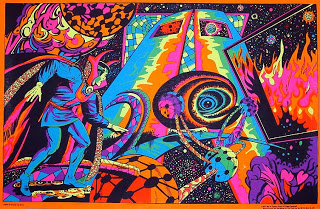

Revolution
25th September
07:01 GMT -6
“Are you sure about this?”
“Yeah, come on. Hit me!”
Guy stares me down with a rakish grin. We're floating above the Chihuahuan Desert, and the ruined proof of the fact that the League shouldn't call upon me to counter an orbital bombardment any time soon. Sandcastle New York lasted about twelve seconds. Sandcastle Seattle managed three. Sandcastle Mount Justice survived for all of two minutes before Guy actually put some effort into it.
The statue of Kon's still standing, mind.
“Alright, but if it looks like it's not working, I'm going to stop immediately.”
“It'll work!”
I hold out my left hand. I've put the ring sigil back on the palm side, and I point that right at him.
“Ring, assimilate.”
The deep orange beam strikes Guy square in the chest and the orange ripples spread out over him like a cocoon.
"Identity Theft in progress. One percent complete. Warning, will detected."
Guy grins harder, and clenches his right fist harder.
”Two percent complete.”
His ring crackles with green energy, momentarily breaking through the orange coating.
”Warning, will intensifying.”
“I am.”
The cocoon shatters as his environmental shield surges.
"Identity Theft ability interrupted by will pulse. Do you wish to resume?"
“Hah! Told ja it'd work.”
His ring is still crackling and his aura is a brilliant green shield of solid willpower and smug.
“Do you want me to try again?”
“Sure! Go ahead.”
Wipe the grin off his face.
“Ring, assimilate.”
Another orange beam, this time pointed at his head. As soon as it touches his environmental shield the beam fades to nothing.
”Unable to connect.”
“Hah!”
“Okay, I'll bite. What are you doing?”
“You said you heal yourself by focusing your need to be perfect. But I'm me right? I already know I'm perfect. So, I just gotta focus on being me, hard as I can? I can do that. I am.”
His aura intensifies still further. He unclenches his right fist and brings his ring up to his lips to kiss it.
Ophidian's Eyes.
No, nothing. All I see is a green Guy Gardner. I'm genuinely impressed. Guy's never been that imaginative, and he's copied my concept and developed his own green-friendly version in a few weeks.
“And the doctor said I mighta had brain damage. Huh, shows what she knows.”
Or you just fixed it. We certainly didn't need hit-on-head-to-change-personality Guy around the place, thank you very much.
“Any news on going back on active duty?”
His aura drops back to normal and his ring crackles as his smile fades. “They've scheduled an assessment for a couple a’ weeks. Dunno why they're draggin’ their feet over this.”
“Because something unexpected has happened, and that annoys them.”
“Hey, show some respect.” He jabs at me with his ring finger. “The Guardians got a whole Corps to run. They ain't got time t’ come runnin’ just cause I'd like ‘em to.”
“Doesn't Clarissi Salaak run the Green Corps?”
“Salaak? Nah, he's just a secretary.”
Ring, message him using Salaak's image.
Compliance.
Guy's ring blinks twice. He frowns at it. “Oh. Hang on.” He holds it out in front of him. “Yeah?”
Salaak's image appears.
Guy immediately clenches to attention, all humour vanishing from his face. “Lantern Salaak. Got a mission for me, sir? Ohhhh...”
The image of Salaak has an orange sigil in place of the green one. Curious, I didn't mean to do that.
Guy drops his ring down and look at me. “That, was a dick move.”
“Pffffff!”
“Okay smart guy, serious time now.” He crosses his arms. “Wonder Woman wanted me to talk to you about the robot attack.”
“What's to talk about? We got owned. If they'd wanted to kill us, they could have done. Lantern Stewart and I-.”
“Yeah yeah, turnin’ the place into a fortress. She said. You really think that's necessary?”
!Yes!
“I think events speak for themselves. I always thought that the whole ‘they won't think to look here’ thing was a bit weak, and the robots just proved me right.”
“Okay but, plasma cannons? Anti-Kryptonian plasma cannons?”
“It's not a measure of power, they just operate on the right wavelengths to disrupt Kryptonian organelles. And they're not cannons, they're just… Efficient. Besides, I said I'd compromise on that.”
“Right... Paralysis traps. Which you got from The Brain.”
I hold out my hands, palms upward. “Which don't cause any lasting harm. An intruder would be rendered helpless, and all a friend who forgot to enter their password would have to do is shout it. Or wait until someone came to check on the cause of the alert.”
“Look kid, I'm not... I've got no say in the rebuilding process. I just wanna know that you're coping okay. How's that meditation thing of yours goin’?”
I look away. “I've... Been having.. trouble. Short term stuff's demanding so much of my time at the moment. And I think I might have messed up with Captain Marvel.”
John got his bone fragments eventually. Marvel didn't say much else to me. I've no idea what he's thinking at the moment.
“Didn't you say that you needed to keep your long term goals in mind to avoid going cuckoo?”
“Look, Guy, two nights ago two robots broke into our home and took most of us prisoner. If that.. if that happened to people under my command, I'd give them a few days before sending them anywhere. Instead, we get sent to India, and nearly eaten by super rats. If we'd delayed a day the team could have been well rested and I'd have started with a full ring charge.”
“Alright, but he's giving you a break now, right? If you let John handle the-.”
I give him a calm and level look.
He looks puzzled. "What?”
“He's sending us to Africa tomorrow.”
“What?”
26th September
17:39 GMT -5
I sit straight, resisting the urge to slump like a moody adolescent. On the other side of the coffee table Guy sits cross legged reading through my mission report again. I think he's stalling. On my right Diana sits with her hands in her lap, waiting for Guy to start. Am I really worrying her this badly?
With a slight wince Guy puts the PADD down on the table and waves his right hand in a circling motion.
“Alright, so... Why'd you say you wanted to go on this mission?”
Huh? “I don't follow.”
He glances at Diana. “Thought Batman was gunna say you could sit this one out?”
“He did. I chose not to.”
“D'you think that was a good idea?”
“As opposed to all my friends going into danger when I wasn't there to protect them? We didn't know that Brain hadn't taken a load of enhanced rats with him.”
“Okay, that's.. that makes sense, I guess. So, you run into these enhanced gorillas...”
He makes a combine harvester motion with both hands.
“The gorillas had Venom-Buster enhancements, augmented brains, inhibitor collars to use on us and telepathy, and by the time we noticed them they were right on top of us.”
“Do you think maybe you put a bit much force into it?”
“I didn't know how good their telepathy was and I thought it would be best to put the baffles in place as quickly as possible. I know M'gann got hurt by the feedback, but I already apologised to her and she said it was fine. Really I still think it was the right decision.”
“No, I meant... Says here you fractured their shoulders?”
“Yes. Well, I tried dislocating at first but that was too slow, and one of them was on the ball enough to push it back in. Think I fractured the brown one's hips as well, he was a bit lively. I didn't even know gorillas came in brown.”
“And you did this..?”
“Sonic lance construct. Turns out that Blockbuster enhanced bones can be a bit brittle.”
First time we've had that sort of melee combat since Santa Prisca. Construct armour with psi-baffles on everyone and Rao's Benediction on Kon plus precision railgun and sonic lance constructs equals one very sorry gorilla troupe. Then, an FTL transmission for everyone to the visible-from-orbit ‘Gorilla City’ and a gratifyingly short fight against a group of local mercenaries later, mission complete. Even better, they'd -they being the Brain and the freaky looking Ultra-Humanite- set up an actual Dolmen Gate and didn't have time to sabotage it before legging it. Pure magic mass teleportation. I'll be taking it to Atlantis for further analysis but damn that was a lucky find. We can track down what magic system they're using and monitor to see if anyone else tries to use it. Not even mentioning all of the potential civilian uses.
“You know they're endangered, right?”
“I healed them all once the base was secure. None of them suffered any long term damage. Plus, with the base under their control they can keep augmenting future generations. Even if they don't use Venom-Buster on them.. well, can you imagine what it would be like for them if none of their offspring shared their improved brains? The modifications Brain made weren't genetic.”
“Paul, that isn't really why we wanted to talk to you.” Diana scoots over to the edge of her seat. “I'm.. we're concerned about the manner in which you conducted yourself.”
“I didn't think any of my decisions were particularly unreasonable. If you'd like to let me know what I did wrong..?”
“It isn't that you did anything wrong, it's that your behaviour was...” She searches for the right term. “Uncharacteristically brutal.”
Oh. Thinking about it, I suppose it was, a bit.
“Particularly when I compare it to the way you dealt with the harpies when we first met.”
“The harpies weren't a threat to us. I didn't know how strong the gorillas were until after I'd started-.”
Um, not sure how to put it...
“Dismantling them?”
I give Guy a look. He shrugs.
“S'what we call it. You saw they weren't an immediate threat to you, so you broke bits until they weren't a threat to anyone. Batman beats up gangbangers like that, hits ‘em where it hurts ‘till they get a clue.”
“Paul, when was the last time you took off your ring?”
Um. Not recently. I've even sort of got used to excreting while wearing it. I don't actually think...
“Paul?”
My eyes drop down. My hands come together in my lap and I start rubbing the sigil with my right thumb. “I haven't taken it off since.. Red Typhoon...”
“Would you please take it off now?”
!NoWeak!
“W..? Why?”
“You told me that the orange light could cause obsessive behaviour, and after the trauma of having your home invaded your behaviour has noticeably changed. You told Lantern Gardner that you were having trouble meditating. Do you think that there could be a link?"
!NoNotBeWeakNeedRing!
My right hand clasps itself around my left.
Wait. You knew this could be a problem. Think it through rationally. Have I changed my mind about something after taking off the ring before?
I don't think s-. No, wait, I did. I changed what I thought about the way I'd been dealing with Artemis when I took it off. It didn't occur to me exactly how hard I was on her until I wasn't wearing it any more. I unclasp my right hand and hold the ring up in front of me, staring at it.
!KeepFriendsSafeNeedRing!
The glow of the ring intensifies. Tiny crackles of power like those Guy's ring gives off when he gets angry flick out from the surface.
“I... I'm not sure I should. Where is everyone?”
“Your team are all inside the mountain. Lantern Jordan, Captain Marvel and Zatara are on site, and Batman is conducting the debriefing.”
“But, if something happened...”
The ring develops an orange flame aura.
“Paul, put the ring on the table.”
!No!
“I need it!”
Diana and Guy share a look and then Diana gets up and beckons me to follow her. Okay... She walks over to a full length mirror mounted on the wall and I follow her. Alright, so what's-?
Oh no.
26th September
17:43 GMT -5
I peer closer at my face, my eyes. I lean so that my face is only a few centimetres away from the mirror surface, turn so that the right side of my face is closest and put my right hand up to my face to pull the skin away from my right eye.
My iris isn't just orange, -and that was weird enough- it's been replaced by an orange sigil. I've no idea how I can even see out of it. I don't remember Larfleeze ever having that in the comics. In fact, the only time I remember that was with Lex Luthor during Blackest Night, when he got an orange power ring after Ganthet duplicated them. He acted like a complete idiot while he had it, despite all the good he could have done if he'd kept it together. He ended up spending months rushing around trying to get hold of an equivalent power source because he couldn't control.. it.. properly.
I turn and walk back to my seat, sit, lean forward and pull the ring from my finger and put it on the table before sitting back as far as I can and trying not to look at it. Diana smiles at me in a matronly way.
“That was the right thing to do, Paul.”
“Yes, I... Hadn't realised...”
I wave my right hand at my eyes. Without the ring on the weight of my armour is quite noticeable, and I shift a little to try and get into a more comfortable position.
”Is it.. gone?”
“Didn't know your eyes were green.”
Might be less ironic, but my eyes are dark green rather than the emerald green members of the Green Corps end up with.
“What colour are yours? Under.. that.”
A small smile. “Brown.”
“Are you feeling any better now?” Diana walks back to her chair, passing behind Guy as she does so.
“Um. Maybe? No.” I shake my head. “No, not really. The intense need is gone, but now I just feel...”
“Feel what?” She leans forward in her seat, and pats my knee. “I know you don't want to talk about it, but you clearly need to in order to use your ring safely.”
I close my eyes. The feeling's back. How I felt when I ran full pelt through the mountain to get at the ring.
”Helpless.”
Breathe. Breathe, and open your eyes.
“When I told you why I wasn't... Why I chose to live here, rather than move in with Alan, and I do.. realise, how happy that would have made him... Do you remember what I said?”
She thinks for a moment, then nods. “You said it was because you needed to identify your team mates' good with your own.”
I throw up my hands for a moment. “Success! I now need, absolutely need, to help them.”
Her eyes flick to the side. “Kon's enhancements, your study of Jay's formula?”
“Among other things. And when the robots attacked, I couldn't...”
“You were pinned to the wall and you couldn't help them.”
I nod, then bow my head and stare at the floor. It sounds stupid, put like that. “I thought we were all going to die. If it was in a fight because we got overpowered, I'd... I don't know if that would be better, but... If it was because I took off the ring to have a shit, after not taking the time to install basic automated defences..!”
I look up, and the ring's floating off the table, glowing, moving towards me.
“No, I don't want you.”
It drops down again.
“Making sure that the Mountain is safe is a League responsibility.”
“But the whole point of this place is that we're supposed to learn to not be dependent on you! A simple walk around identifying weaknesses and I could have sent a report to Batman. Or just.. just fixed it myself. Can't believe it took me as long as it did to make sure Artemis had decent arrows.”
“Look, Paul, I felt pretty stupid when I got outa the coma and the doctors told me I got taken down by a bus, but-."
“How often do you take your ring off now?”
He hesitates, then tries to crack a smile. “I sure look both ways before crossin’ the street.”
“Not what I asked.”
“Well..." Diana looks at him with an eyebrow raised. He shrugs. “I don't wear it all the time.”
She turns back to me. “When you're not wearing your ring, are you better able to cope with your desire to help your friends?”
“Without the ring I can barely act on it at all. Um, yes, I suppose.”
“And are you able to meditate while not wearing it?”
I close my eyes. Ah... Respect for others? Thinking about it, Kon could probably have got those rats off of him without me or Wallace.
No sudden overwhelming sense that of-course-he-needed-me. Looks like I should be alright. I open my eyes.
“Yes. Hm. Maybe... Maybe Orange Lanterns always go insane, and the best I can really hope for is to steer it so I go insane in a productive way, rather than an unproductive way?”
Diana doesn't follow. “Productively insane?”
“You know, like Batman, rather than like Larfleeze.”
I've noticed that Diana doesn't do stunned exactly, but she does hesitate for a moment when you surprise her in conversation. “Batman isn't crazy, Paul.”
I bow my head a little and look at her with my eyebrows raised. “Massive psychological trauma in childhood leading to intensely aberrant behaviour as an adult?”
“He's just dedicated.”
I keep staring.
She looks over to Guy, who face shrugs. “I was kinda wondering.”
She dismisses the idea with a shake of her head. “We're not here to talk about Batman. Can we agree that it would be better to make sure that you remained mentally coherent?"
I nod. I feel a little relieved. I don't want to keep feeling like this.
“Then this is what I'm going to suggest. I will speak to Batman about allowing you to make the changes you want in order to ensure that the Mountain is properly defended. In return, you will take off your ring for at least an hour each day, both to meditate and to ensure that it is not affecting you unduly. After a week, we will review your mental state and see what changes we need to make to your training regime. Does that sound fair?”
An hour? I look over to where it lays on the table. Could I cope with that? Now, yes, but while wearing it? It sounds like a reasonable thing to do, and I don't want to have my brain altered by the ring.
“Could I keep it close by, in case I needed it?”
“Would that have the same effect?”
“I don't think it's affecting me now, and it's less than a metre away.”
She nods. “Very well then. Do we have an agreement?”
I nod. “Yes.”
1st October
18:05 GMT -5
As I reach the ‘esteem’ part of the hierarchy I open my eyes to look at the newly fortified doors of the hangar. At the hardened interior doors. At the place where the reactor used to be before Lantern Stewart and I moved it deeper underground to a more secure location. Shame he didn't like my idea of ‘accidentally’ leaving the schematics for something a bit more sophisticated somewhere I could find them, but I guess that was fair. Lastly, I smile slightly as I look at the EMP emitters, motion sensors and paralysis field generators now built recessed into the walls. Not an exact copy of Brain's design as it turned out that those ones usually caused a Human caught in them to have a stroke after half an hour or so, but just as effective. I know, because I tested it. Doesn't even hurt. I found it rather fun, actually, trying to move and not being able to when there's no obvious reason for it.
The ring's back in my room, along with my lantern. Given how big a problem it could be causing, I've been going without for more than the agreed upon hour. It's going to be about four hours today. I don't know that that's necessary, but then I read Gone With The Wind when my mum suggested that I branch out from science fiction, horribly long racist -both horribly long and horribly racist- piece of rubbish that it was. If it's safe to take it off for one hour in here -and I honestly think that it now is- then it's only slightly less safe to take it off for four. Confidence. I can be confident without the ring. This world isn't quite dangerous enough to justify wearing it inside a properly fortified mountain. Not sure I'm ready to go outside like that yet. Maybe next week, after Diana and Guy review my mental state.
Queen Mera was delighted with the Dolmen Gate, and promised to put a team on it. Guess Wotan really knows his stuff. Poseidonis seemed to have stood down from high alert, and the mix of guards was noticeably less sharky. I'm glad. It wouldn't be any fairer to discriminate against purebloods than it is to discriminate against... Still don't know what the polite term is. Ablantian? Have to remember to ask Kaldur. Or would that be like me asking a black man what the polite term for a nigger is? He came with me for the trip. Think he picked up some more equipment, but I haven't got around to asking about it. Anyway, that was a worthwhile achievement.
As was capturing Gorilla City intact. The League's going to keep an eye on the place for now, and they haven't told the Bwundian government about it. My knowledge of African national borders isn't good enough to recognise the country or countries Bwunda replaces. The name makes me think Rwanda, but though there has been some ethnic violence post colonial independence there's no history of outright genocide. I doubt that there's much risk in keeping knowledge of the existence of a small group of sentient gorillas secret. I only saw about forty adults plus their offspring. Will inbreeding become a problem? I wonder if they'll need to uplift neighbouring groups in order to cope?
M'gann appears to have made a full recovery from the rat episode. Mister J'onzz told me that he doesn't have reference materials on Martian psychology with him, but that he'll add it to the list of things he'll bring back with him on his next visit. He spent some time around the mountain after the India mission, and told me that as far as he can tell M'gann is fine. I was pleasantly surprised by her response to my suggestion that we upgun the bioship. Not just the fact that she liked the idea, but that she had already been putting time into working out how to make it work physically. She laughed off my semi-serious suggestion of popping over to Mars and looting their military databases. Hm. Integrating Earth weapons would require the ship to give up some of its shapeshifting, so we'd have to remove them regularly for its regeneration cycle. And it couldn't fire when in stealth mode. A problem for later, perhaps. Anyway, her decision making during the mission was exemplary and there's no way she could have predicted what the chemical would do to her.
Turns out Robin and Wallace had been wondering whether I was the source of Mister Luthor's access to the Danner Formula. Not sure my saying ‘he didn't ask’ was quite the reassurance they were looking for, but the video of Doctor Munro lifting an unconscious Venom-Buster elephant over his head when Mister Luthor's people finally got on-site made the alternative quite apparent. I'll have to ask Thomas Beresford when I see him next week. I tried booking a visit to see Tuppence first, but was told that she didn't want to see me. Doctor Strange is still in charge of Belle Reve at the moment. I've got no idea how long the hearings are likely to last. I was prepared to ‘deal’ with Waller in some way if she was like the comic version, but she actually seems okay here.
Wallace is finally getting ready to start his first alchemy experiment. His aim is to produce something simple, but which has no basis in its chemical components. I thought about offering to help but, respect for others. I trust that he'll have the sense to ask if he needs me.
Guy's been trying to teach me to generate power ring energy pulses. I think he's accepted that I'm never going to be able to shield a sandcastle in the way Greenies are trained to do. Similarly, the sort of endurance training Kilowog made him do wouldn't help me do anything but hit him harder. Energy pulses on the other hand are supposed to be perfectly possible for anyone with a power ring. The Greenies can all do them and Star Sapphire certainly used them. Alan didn't, but he had no training. I remember them from the animated versions; just point the ring and fire. Turns out? Not that easy. The theory behind it seems to involve making the same sort of furrow in the universe we use for FTL travel, but sending a packet of energy from the ring rather than myself. I can sort of do it, but not reliably enough to want to try it in an actual fight and Guy's at a loss as to how to put the thought processes necessary in terms of avarice rather than willpower. Bloody powerful for its energy cost when I can make it happen, though.
The only part of self-actualisation I need to dwell on is that while I may not be entirely responsible for my own actions under extreme orange influence, I am responsible for getting into that state. I cannot allow my mind to decay like that, for the good of my friends and mentors as well as for my own sake.
Right. That's done then. I rise to my feet, and shake my legs to try and get the cramp out. Uh, that's the sort of thing I've had to get used to now I'm not wearing the ring full time. That, and not walking into the corner of kitchen units. And paper cuts. And all the other stupid stuff the ring just made go away. Hurrrrrr. Wonder if there is a safe way to wear it full time? At least I've been able to shit naturally again.
“Hey Paul. Wally said I could probably find you down here.”
I stop the pins and needles dance and look over to Artemis, standing in the newly fortified lift.
“Good evening, Artemis. How was school?”
Haven't seen her in civilian clothing much. Black trousers, white t-shirt and a sort of short jacket thing. It's brown. Doesn't look very practical.
“It was... It's okay. Kinda weird having to wear a uniform.”
“In Britain, it's all uniform all the time.” I start walking towards her. “Will you be staying for dinner?”
“Um, yeah, I think so. I was thinking about picking out a room here, for when I want to stay over or for keeping my equipment in. Hard to explain some of that stuff to the building super.”
“Plenty of rooms left, and I can always dig out more if nothing's to your taste.” Evil grin. “Plus, it'll give you somewhere to hide out when your mum starts dating again.”
She gags. “Uah! Don't even joke about that!”
I tone down the evil. “How's your mother's physical therapy going?”
“It's going really well. She's on crutches now, pretty much stopped using the chair.”
“Oh, that's great!”
I enter the lift and turn around as she presses the button for the main meeting room. M'gann's on dinner duty today. Kaldur and Robin were sparring...
“Mom.. wants me to invite you over for dinner.”
I turn my head to look at her. She's looking at me and smiling.
“Well, I.. don't have any plans for the next eight months. That would be lovely. Did she have a particular day in mind?”
“I don't think so. Why, what's happening in eight months?”
“I'm travelling to Maltus for the first time. That's where myyy... Employers?” I make a circling motion with my left hand. “Live.”
“Huh. Don't think I've ever seen you without your ring on before.”
“I go to meetings now. They're very understanding. ‘Hello, my name is Saul and I'm a ring user’.” Her eyes flick down, and her smile lengthens slightly. Ah, I should probably ask about that. “While we're alone, have you given any thought to the augmentation question?”
Serious face. “The.. strength.. formula. That's what that Munro guy and the Terror Twins have, right?”
“Can we not call them the Terror Twins? Their names are Thomas and Tuppence Beresford.”
“Planning on visiting them, too?”
“I am, yes. Well, Thomas. Tuppence doesn't want to see me. But, yes, that's where their strength comes from.”
“And those freaky rats?”
Turns out that while Danner and Garrick can't work together, Danner and Blockbuster work really well. I still don't know enough to know what that says about the mechanism.
“The small ones who came after Kon, Wallace and I had it. The big ones had that and Blockbuster, which was why they looked like they did.”
“And there aren't any.. y'know, side effects.”
“None ever reported, and we've got several human subjects and, um, loads of rodent ones.”
We share a chuckle.
“And.. and it's permanent?”
“’Fraid so.”
She looks down. “I think I'm-."
The lift door opens, revealing Wallace eating a bag of popcorn. “Hey guys. What's up?”
1st October
18:13 GMT -5
Artemis stalks ahead of us to the training area.
Wallace nudges me in the ribs with his free arm. “You know, if you wanted a little more ‘elevator time’, I'd totally have understood.”
“Wallace, we were just having a private conversation. It wasn't anything... elevator timey.”
Another nudge. “Staying faithful to Kon, I can respect that.”
Uhh.
Up ahead, I see Kaldur and Robin in full civilian clothing. Whow, they must stink like arse if they've been sparring in that. I mean, the aircon here's good -great really, thanks to Lantern Stewart's hard work- but that's still a couple of layers of clothing while performing combat acrobatics. Kon and M'gann are standing together at the left side of the room, and Captain Marvel and Mister Zatara are standing together at the far side. Marvel seems to have bounced back from the whole Kahndaq thing, though I've no way of knowing if William is handling it as well without Achilles’ help.
I hear Wallace sigh as we approach Kaldur, Robin and Artemis.
“So if Zatara's our babysitter of the week, why's he still here?” He points at Captain Marvel. “And why is he eating my snacks!?”
“He and I were investigating Theodore Adam's-."
"Recognised, Batman, zero two."
The zeta tube glows as Batman materialises, striding towards us. “Computer, national news.”
I think that's the least growly I've ever heard him.
A large holographic screen appears on our right and we turn and face it. Ms Grant appears centre shot, reporting from Metropolis. “The initial attack was short lived, but Metropolis was only granted a short reprieve.”
A giant towering pillar of vines -which remind me slightly of the Monster Minds from Jayce and the Wheeled Warriors- has risen straight up from the centre of a street and sent out tendrils in all directions. As we watch, a building is enveloped and then crushed.
“And despite the intervention of Superman-" Kal-El flies in to evacuate two people from a roof before that building too is reduced to rubble. “-and the Justice League-" Hawkwoman flies across the rooftops and swings at some of the more adventurous vines.
DontThinkAboutHentaiDontThinkAboutHentai.
“-there seems to be no end in sight.”
Lantern Stewart cuts off a vine that had struck Hawkwoman before the two of them head towards the central plant tower. The severed vine appears to have a disturbingly red interior. Is it really a plant? Hawkman flies in behind his colleagues, cutting through another vine. How did he do that? How did he make a straight cut with a mace? Is that some property of Nth metal weapons? Because I've been reading up on them, and I was expecting there to be a brittle carbonised chunk which would collapse on itself, not a neat line.
“Shall we get out there?”
Robin can barely contain his excitement. I checked, and Swamp Thing's junglefication of Gotham hasn't happened yet, if it's going to happen at all. I could check with John, but some of the stuff that happened between him and the swamp god was a bit personal. Lending Swamp Thing his body to get Abbey pregnant? As far as I can tell by indirect means that should have already happened if it's going to happen, but I'm not sure I could explain the question if it isn't going to happen.
Batman turns back to us.
“No. The League will soon have the situation under control, that's not why I'm here. According to your intel-" A picture of Mister Crock in prison garb appears next to him. “-Sportsmaster supplied Cadmus’ Blockbuster Formula, to Kobra.”
“Who combined it with Bane's Venom to create Venom-Buster.”
Thank you for the reminder, Wallace. I'd completely forgotten about that.
“Which The Brain combined with the Danner Formula to create his animal army.”
Are Robin and Wallace part of an exposition club or something?
“The Brain also used inhibitor collars, like the ones at Belle Reve penitentiary.”
M'gann too, I see. Nice that she's got hobbies other than pompom prancing.
“Batman, is it possible that plant thing is on Venom-Buster too?”
I narrowly avoid rolling my eyes. Of course not Artemis, that's ridiculous, it's a plant, how would-?
“I had Green Lantern run a spot analysis.” Batman waves his left hand in front of him and a holographic keyboard appears. “The vines' cellulose does contain trace amounts of a Venom-Buster variant.”
How is the what? What?
...
What?
“These cannot be coincidences.”
No, Kaldur, they can. They can also be completely unimportant. They're drugs, they were always going to get out somehow, and we never could be completely sure that Kobra hadn't shipped some of the stuff out in advance of the main delivery.
“Unrelated criminals cooperating with each other worldwide.”
If they're cooperating they aren't unrelated, are they? It's a supply network, so what? That's like saying that the guy who invented the AK-47 is working with Somali pirates. Robin opens a holographic keyboard of his own and starts typing frantically.
“Exactly. It's now clear our enemies have now formed some kind of-" Don't say it. Please don't say it. “-secret society of supervillains.”
If I was wearing the ring, I'd generate a wall just to have something to beat my head against. We have no evidence of broader cooperation! There are all sorts of links in supply chains!
“The attack on Metropolis is only the beginning.”
I tentatively raise my right hand. “Sir, have any sort of demands been made? Or do you think someone's just doing this for fun?”
“No demands have so far been issued.”
“It isn't just Metropolis.” Robin generates four additional screens adjacent to the main one. “Plant creatures have sprouted in Gotham City, Paris, Star City, London and Taipei.”
Oh dear. Might have to do something about London myself. Then the pictures on the screens cut out at once and are replaced by static. Batman turns to them, presumably to stick his hand down the back and fiddle with the aerial cable. Wallace looks at Robin's keyboard.
“Dude.”
He types with frantic speed, trying to work out what's going on. Maybe I should get the ring..?
“Not me. Someone's cutting into the satellite signal. All satellite signals.”
Then the static disappears, replaced by...
1st October
18:17 GMT -5
I've seen pictures of Jack Napier before, but since he isn't a threat to me I didn't study him at any length. He seems to have gone the canon failed comic to Red Hood to pasty nutter route. Scans of his Arkham records gave me his DNA, and it looks like Lonnie really is his son. Not sharing that piece of data.
He leans up to the screen -camera, I suppose- and taps it with the knuckles of his right index and middle fingers.
“Ladies and gentlemen. We interrupt your regularly scheduled mayhem-"
Go for the ring or stay here? Oh, one of the Greenies has got to be tracking this, right?
“-to bring you this-"
He draws and flicks open a flick knife. Is he going to stab someone on worldwide television? Would be in character I suppose. He reaches forwards and past our point of view -presumably to take hold of the camera- and the viewpoint rotates.
“-important announcement-”
Centre screen are Wotan, what looks like a Zombie in military fatigues, the Ultra-Humanite, Count Vertigo -weirdly, his real name and title-, Theodore Adam and Doctor Pamela Isley. So, two I couldn't solo for definite, and Wotan's the only one who actually worries me. Got to find out who that Zombie is. Sometimes not knowing who people are is another effect of not wearing the ring full time.
“-from the Injustice League. Hehuhhuhhahahahahaha”
Really? That was the best name he could come up with? I mean, it sounds dated when the Justice League use it. And the Zombie's got his hands in his pockets. He's not even looking at the camera! At least the others are glowering at the audience.
The camera zooms in on Count Vertigo.
“We.. are responsible.. for the attacks on your cities.”
Well, someone's about to get squashed by the might of whatever air force is closest.
“If you wish to save them, a ransom of ten billion American dollars is required.”
I saw pictures in Gorilla City, but the Ultra-Humanite's head is really freaky. The hair on the top hasn't grown back yet, and I think the surgery must have been performed by Mallah or something because those scars are huge. Would they have had to enlarge the internal space to fit a human brain? Maybe, but the gorillas we met were fully sentient with regular sized heads. Wonder if the technique Brain used on them would work on regular humans?
“Delivery instructions have been sent to the United Nations.”
A bit like in Soon I Will Be Invincible, when Doctor Impossible makes his ‘make me ruler of the world’ demand and then waits for the superheroes to show up. Apparently they actually had a legal formula whereby that could happen. I guess you just have to be prepared for these things when you live somewhere like this.
“There is no time limit, but, the longer your governments wait...”
Napier's hand moves across the lens and he pulls the camera back around. His face fills the shot. Someone didn't go to film school.
“The more we get to have our.. jollies.”
He breathes the last word with passion.
“Ehhuhhuhhuhhuhhuhhuhhuh!”
The camera cuts off, and static returns.
Well, this is some old school supervillainy. Giant plants terrorising the planet, criminals with no goal but their own enrichment, a basically unworkable scheme...
Batman's communicator beeps. “Roger that Aquaman, the UN will prepare the ransom as a fallback. But it won't come to that.”
Robin's back on his keyboard. This is technically a briefing, so I don't think that running off to pick up the ring would be polite. Maybe I've been a bit too enthusiastic about the not-wearing-it-the-whole-time thing. I'm basically reduced to standing here like a lemon without it.
The villain team photo reappears on the main screen, and little boxes appear around its members' faces as he says their names.
“Count Vertigo, Poison Ivy, Ultra-Humanite, Atomic Skull,-"
Oh, that's who the Zombie is. I was expecting something more like the Justice League Unlimited version.
“-Black Adam, Wotan, seven heavy hitters!”
Were the rest hiding behind the gorilla?
“Probably behind everything and everyone we've faced.”
Seeing links where none exist? Isn't there a word for that?
“Could we please use their actual names?”
He flashes me a look. I think I threw him off.
“There's your secret society!”
I add Wallace to the debit side of my only sane man meter. Or maybe just my wrong genre savviness meter. Is this how things work here? I had been assuming not, but... “We don't have any hard evidence of a broader system of cooperation. Besides, why would a secret society broadcast to the entire world?”
“Perhaps after India they saw that we would deduce the truth and saw no point in hiding any longer.”
And Kaldur.
“All we knew was that Ultra-Humanite, Brain and Wotan were working together. Now we've seen their whole roster and know exactly who to prepare for. And where's Brain?”
“Whatever's going on, we need to get out there and kick some plant creature butt!”
“Wallace, they don't have-."
“The Justice League will handle the plants. I have a different job for this team.”
“Owh mayn..”
Wallace gets punched in the shoulder by Artemis. I'm really starting to like her.
“With the plants attacking so many locations simultaneously, there must be a central control system.”
I'd dispute that, but this is Batman. He's got way more experience of supervillain hijinks, and presumably has a better idea of the limits of MadTech.
“Your mission, is to destroy it.”
“You realize what you're asking them to do?” Zatara walked forward from the pack while we were focused on Batman.
“They're ready.”
Guess I'm going to be trying out the anti-Theo Adam techniques sooner than anticipated. Should work, though I would have liked to go over things with John once more.
“Ready? Ready for what?”
And Wallace earns another punch, and Artemis swiftly pays him with one. What was it Superboy said about Impulse in that comic? Quick, but not swift?
“Aow!” He rubs the bruise. I'll have to repair that before the mission proper gets underway. “Will you cut that-."
“Hello Wally!” Huh, works in British English too. “If the big guns are fighting plants, who do you think we'll be fighting?”
“I don't know! I guess we'll-."
Artemis points at the screen. Wallace follows her finger, then gasps. Oh my goodness.
“Ooooohh.”
I raise my right hand, index finger extended. “Can I bagsy Theodore Adam?”
1st October
18:21 GMT -5
Mister Zatara looks us over for a moment, then turns his head to look at Batman. “Well Batman, I trust that you are correct.”
“I trust you can locate the enemy.”
If it was Wotan who warded Mister Luthor's research centre, then he's almost certainly warded his own base in the same way. I don't want to underestimate Mister Zatara's abilities, but if he doesn't struggle at least a little then the lentils have gone and blackness is all that remains.
“Indeed. Wotan's involvement suggests sorcery is a part of how the plants are controlled. Robin, if you would provide a holomap.”
More frantic tapping. I can't help but feel that perhaps a custom keyboard layout would be better for him. A pale blue translucent globe about four metres pole to pole appears in front of us, rotating slowly.
“I'll search for signs of concentrated sorcerous activity.” He walks forwards, his shoes clicking on the floor. When he gets to optimal distance he raises his hands. "Etacol retnecipe fo yrecros!"
Hundreds of red dots appear on the globe, blinking out and reappearing elsewhere moments later. The globe itself shudders and fritzes.
Zatara frowns. “Laever!”
The globe stabilises, the number of red dots is reduced by about a third and their movement slows.
Wallace cocks his head to the side. “Some kinda magic proxy server?” Artemis scowls at him suspiciously. He raises his hands. “I'm serious, that could happen.”
“Laever!”
I make momentary eye contact with Captain Marvel, who nods. I raise my hand again.
“Sir, would it help if you had something to focus on?”
Mister Zatara lowers his hands with a frustrated sigh. “Yes, but a few pieces of the Ultra-Humanite's body fur will not suffice. I am sorry, but there are wards in place that are far more complex than anything I have previously encountered.”
Robin tilts his head slightly to the side. “Maybe Wally's right about proxy servers. Oh El, you said that you saw Wotan when Brain used a magic portal to escape in India, right? Maybe they've been comparing notes?”
“I wasn't thinking about body fur, sir. I have a fragment of Teth Adam's bone. It's had about five thousand years' contact with his magics...”
And everyone's staring at me.
Kaldur voices the question. “How did you get a piece of Black Adam's bone?”
“Captain Marvel-" I point over my shoulder to him with my right thumb. “-and I were investigating his background, found his tomb in Kahndaq.”
“Ah, Oh El?” Wallace points at the screen. “He isn't dead.”
“Dih? He sort of is, it's... a bit complicated.”
Batman's eyes narrow. “I don't remember seeing a report.”
“I haven't finished it yet. Um, look, I'll get the ring,-" I point in the direction of my room. “-hand Zatara the bone, and stick what I've written up so far on the system.”
Batman looks at Mister Zatara, who nods thoughtfully. “A piece of bone certainly should work.”
Batman nods at me. “Go.”
I step around Kaldur. “Excuse me. Thank you.”
Once I'm out of the huddle I run towards my room. I knew this sort of thing might happen if I stopped wearing it full time! Uhh. Right, from now on just an hour. And my room's still furthest away from the training room! I might need to move-.
I turn a corner and skid to a halt to prevent myself running into Teekl, who is sitting on the floor licking her right forepaw.
“Bloody cat! What are you-?”
She looks up, and the ring's in her mouth. I kneel down in front of her, and rub her head just in front of her ears with my right hand.
“Sorry Teekl. Good choice, well done. Are you going to give it to me?”
She rubs her head against my hand, looking me in the eye. Just as I'm about to ask again, she opens her mouth and drops it to the floor.
“Thank you.”
The ring glows faintly, and flies onto my left ring finger, sigil inwards. A wave of orange later and I'm dressed for work. I look at Teekl and pat my left shoulder with my ring hand.
“Coming?”
She looks at me with her head tilted to the side until just before I get up to leave without her.
"Teekl come.”
She floats around me, then I feel her pressure next to my head and then her weight on my shoulder. I stand up and transition, taking the padded case containing the bone fragment out of subspace the moment I rematerialise. I step forwards and hold it out to Mister Zatara.
“Careful, it's very fragile.”
He takes it, and opens the lid. “Do I detect the hand of John Constantine in this?”
“Erm. Yes. Sorry.”
He sighs as I step back into the huddle. “Taolf enob.”
The dull yellowy brown bone shard floats up out the case, which he closes and slips into his jacket pocket. With the bone hovering between them, he holds out his hands towards the blue globe once more.
“Enob, raeh rouy s'renwo llac! Laever Kcalb Mada!”
Shouldn't that be Teth... huhtet? Thet? I've no idea how it would sound. Works anyway. The bone floats, rotating slowly on its axis, and begins glowing gold tinted white. Then it leaps towards the globe, anchoring itself somewhere on the southern US coastline. More tapping from Robin.
“Coordinates locked in. The Louisiana Bayou.”
Kaldur nods. “We are on our way.”
1st October
18:25 GMT -5
Zatara waves his right index finger at the bone and it floats down as he delicately returns it to the case. My team mates turn as one for the exit as I pluck the case from Mister Zatara's unresisting hands and return it to subspace. I turn to start towards the hangar. Artemis, Robin, Wallace and Kaldur will be heading to the changing rooms and then to the armoury. Kon's pre-changed, and M'gann shifts from her casuals to her field costume as I watch. I start walking too. There's really no hurry for me, it'll take at least-.
Why is Captain Marvel going with them?
“Captain Marvel.” Batman speaks, he halts. Batman's chairman of the League at the moment, which I think makes him Marvel's superior. Possibly? I'm not completely sure how that whole thing works. “For this plan to succeed, the entire Justice League must be seen fighting the plant creature.”
Oh. This is the first time we've had contact with Black Adam since finding out exactly what happened to the Batsons. Marvel's face isn't showing disappointment, he's actually angry.
“You, Zatara and I are needed elsewhere.”
I wonder..? Batman almost certainly knows who Marvel is. Heck, he had to step in to stop him joining us on the mission to Africa. But he doesn't know exactly how Marvel's parents were killed, he won't understand why his normal approach might not work. Is Marvel wearing his communicator? No? Darn. Directional amplification, please.
”William, I'll get him for you.”
He turns his head in my direction and I meet it with a slight smile. Come on, you told me Shazam picked you because you overcame the Enemies of Man. Beat Hatred again. I can literally see him force down his anger as he swallows and forces his face to relax. Another moment to put his normal friendly smile back in place. I get a nod, and then he walks over to his two team mates.
“Okay, Batman, where are we heading?”
I transition to the lift, appearing next to Kon and M'gann. Any preparation I need to do?
Ring, charge?
Ninety six percent remaining.
That's fine. Haven't really done much with it today. Hm. London attack might be a good time for Robert to show-.
“Louisiana? Giant plants? Didn't we spend a whole day looking for a plant guy down there back in July?”
I look at Kon, and start feeling stupid. “Yes, yes we did.”
And I still have Abigail Holland's phone number. Not that it'll help if she's out in the swamps somewhere. Would Batman have already phoned her? Won't hurt to check. I generate a phone construct next to my right ear as the lift opens.
“I'll try and get hold of Missus Holland now.”
We walk into the lift.
“Is Teekl coming with us again?”
I feel her ears brush against my cheek as she turns her head to look at him, and he takes a step away. She showed no interest in joining us in Africa, but I hadn't actually asked.
”Teekl come? Where come?”
M'gann smiles and leans over to scratch Teekl's head.
“There are some very bad people in Louisiana, and we're going to stop them.”
”Hunt?”
“Well, we don't know exactly where they are so.. yes, we'll need to hunt them.”
"Teekl come hunt.”
Kon doesn't seem to be impressed. “Maybe we can use her as bait.”
"Ooooreeeeorhh."
Ring, dial.
Compliance.
“It's ringing now.”
Of course, going by past experience she's either not there or she's just not going to-.
“Hello?”
“Missus Holland, Orange Lantern two eight one four. We spoke back in-."
“I remember. What do you want?”
“I don't know if you're watching the news, but some rather large plants controlled by a group calling-."
“I saw the broadcast. Alec isn't helping them.”
“Of course not, I wasn't about to accuse him.” The lift doors open, and Kon leads the way to the bioship. “It's just that it would be really convenient if a guy who can control plants would turn up and deal with this supervillain engineered death vine thing before hundreds of people died. I mean, that is sort of his job, isn't it?”
“I don't know. Recently, he's been... Alright, look, I'll see if I can get hold of him. I don't know how long it'll take though.”
“Thank you Missus Holland, that's all I can ask.”
I drop the phone construct. Not what I was hoping for. I do remember something about her and Swamp Thing becoming estranged in later comics, but that only happened after the nameless thing killed about a third of my species, and I think someone would have mentioned if that had happened. Right, next job.
Ring, dial Robert Marrack.
Compliance.
The rear hatch of the bioship goops into being and Kon and M'gann board. I know I could make this phone call just as well from inside, but I feel like pacing a little. I hear the ringing as the ring makes contact.
Still ringing. Then:
“If this is another bloody insurance call-!”
“Rob, it's me.”
“Oh! Orange Lantern -shut up, Dad, shut up!- what is it?”
“Am I interrupting something?”
“You know there's a bloody great plant attacking... Yeah, course you do.”
“That's what I was phoning about. Any chance you and your Dad could put in an appearance?”
“Dad can teleport us between standing stones, but some complete... Some complete nobbler has only gone and killed every stone circle anywhere near London. It'd take hours by car and Dad... Dad's not keen on us trying to get a plane.”
There isn't a zeta tube in Truro. London, Edinburgh and for some reason Brighton.
“Okay, keep your hair on, I'll see if I can pick you up.”
“Aw, thanks mate!”
“I said I'll see, I'm going to be occupied myself. You know anything about fighting giant plants?”
“N..no...”
“Alright, I'll see if I can get you a weapon as well. Don't go anywhere.”
I hang up.
...
Apophenia! That was it!
1st October
18:30 GMT -5
First thing that comes to mind when it comes to weapons for mystically enhanced melee fighters is swords. Diana's got a few enchanted weapons in the embassy. Her actual combat sword was a gift from Queen Hippolyta after she returned to Themyscira post World War 2. It's got all sorts of nasty enchantments on it, but her training swords are just charmed not to break when she hits things with them at full strength. Could be just what the Cornwalls need.
The other thing that's tickling the back of my mind is Lantern Medphyll. In theory, getting hold of him by ring is easy, and he's certainly demonstrated plant control abilities with his ring that would make him invaluable in a situation like this. Or at least he did in the comics. I don't know his sector number so I can't get hold of him myself. Have to see if I can get hold of Guy.
Ring, locations of Guy Gardner and Diana.
Agh! A incomprehensible blur of images of Leaguers and giant vines. Right, one at a time, please.
I see Guy holding a huge creeper away from a tall building with a tall barrier while the people inside evacuate. His head turns back for a moment, watching them go. As the stream trails off he smiles slightly before turning back to the plant. His face tightens, his ring pulses and giant vegetable knives appear, attached to him by filaments projected from his back. I taught him that. The knives swing forwards and the vine is cut into slices. The crowd cheers and Guy turns to say something to them. This seems like a good time.
Ring, contact Green two eight one four B.
Compliance.
Guy's head snaps around to his ring, and the picture in my mind is replaced by the picture projecting from the ring. “Little busy here, Orange. What is it?”
"Have one of you Greenies tried to get hold of Lantern Medphyll yet?"
"Who?"
"Lantern Medphyll. The plant guy? Yellow skin, one eye, leaves growing out of his head?”
“Never met him.”
“He can use his ring to control lesser forms of plant life. If he can-." The image jerks and dissolves for a moment. “Er, Guy? You alright?”
“R-. Really busy, Orange!”
“Just give me his sector number, I'll call him myself!”
Silence for a moment. “He's five eight six A. Now y'mind if I-?”
“Thankyou.”
Ring, end.
Compliance.
Alright, so I can now get hold of the Lantern I consider to be the model of Lantern comportment. Maybe the first properly alien alien I've met since getting here. I mean, M'gann looks human most of the time, Kon and Kal-El look human all the time. I remember the snapshot that issue of Swamp Thing gave of his home planet. Giant sentient trees for buildings, plant forms replacing animal forms throughout the ecosystem and a Lantern who can manipulate plant life by controlling his own spiritual resonance.
I haven't tried randomly contacting Green Lanterns, though I suppose I could have done. Don't want to antagonise them unnecessarily, after all. I have no idea at all where five eight six is in relation to two eight one four, but it shouldn't take too long for a Lantern to travel from one to the other wherever they are.
Next thing, the Cornwalls. I'll have to leave the mountain to pick them up, which means speaking to Kaldur first. And Diana. I don't have unrestricted access to the Embassy's armoury. In fact, I have ‘don't ever touch these unless I'm here’ access, though that order was given in one of my early training sessions. Maybe I could talk to Sephtian about getting her an-.
“Hey, Paul, you coming?”
I turn to the bioship and see Kon sticking his head out of the hatch. M'gann's probably ensconced in the pilot seat, running a check on the ship's systems. There isn't a pre-flight checklist exactly, but M'gann likes to make sure that everything is in full working order. In a normal commercial aircraft the journey to southern Louisiana would take us about five hours, pretty much the same time as it took the bioship to get to northern India. Should take us about an hour and twenty minutes.
“Just doing some plotting, Kon. Ring, where's Diana?”
In my mind's eye I see her airborne, hacking smaller tendrils from a central vine... in? London. Convenient.
“Orange Lantern to Wonder Woman.”
“Go ahead.”
“Got some local help for you, but they're stranded in Truro. Also, any chance you could lend them a couple of your training swords? I don't think their skills are optimised for anti-plant work.”
In the corner of my eye I see the lift doors open and the rest of the team enters the hangar.
“Captain Cornwall? I remember his grandfather. If they offer their aid-" One tendril severed, and a gouge cut out of the main trunk. Immediately, Hades' bound spell goes to work on the living plant matter, causing it to necrotise and fester. There's a reason Diana usually leaves that sword behind. “-I will gratefully accept. I also give you my.. permission-" She swoops lower, slicing at the vine as she does so. “-to use the swords.”
“Thank you sir.”
I hang up as my team mates file past me and what is Kaldur wearing!
“Kaldur.. what..?”
He stops in front of me. I think it's him, anyway, the familiar full helm with its glowing red eyes is obscuring everything but his mouth.
“P-. Orm’s trial begins later this week. My Queen thought it would be best if Ocean Master's armor was removed from Atlantis for the duration. Given the power at our foe's command, this seemed.. prudent.”
His normal red vest and navy blue leggings have been replaced by a black body suit with pale purple armoured plates around the shoulders, forearms and boots. I wince slightly as I see his bare hands. Better than what he normally wears, I suppose. His Water-Bearers are attached somehow to his waist, but he's carrying the trident in his right hand.
“I would have liked more time to grow accustomed to wearing it, but we do not have that luxury.”
Everyone else has boarded, and he walks after them.
“Aqualad, can you spare me for two minutes?”
He swings his head in my direction. Huh, good articulation. “We cannot wait. The attack-."
I hold up my hands. “It'll take the bioship over an hour to get to Louisiana, and I can catch you up in the air. Two minutes. It'll really help the League in London.”
“Hey, are we going or what?!”
Hurry up and wait, Wallace.
Kaldur's head turns to the ship, then back to me. Is his field of vision getting restricted?
“Very well. Two minutes. Do not take longer.”
“Ring, embassy.”
1st October
18:35 GMT -5
I materialise at the front door, the ring already feeding in my entry code. A click as it unlocks and I push forward, raising my right hand in greeting to the woman on the reception desk.
“HiMsCandysorrycan'tstop.”
Transition.
The entrance to the armoury is in an out of the way part of the embassy. Two security doors bar the way, which is why I had to be ordered not to go there without explicit permission as neither of them slow me for more than the four seconds it takes for them to open a crack. The short corridor between is warded, but they're far more passive than the ones in Poseidonis and with the Spell Eater I don't even feel them. First time I came through here I was giggling drunkenly by the time I got to the far end, but not anymore! Last transition and I'm woow! I bend back limbo style as the spear passes over my nose and transition to the far side of the room as the hulking kithotaur wielding it moves to a guard position.
“Ferdinand, what the hell, man?”
“Oh! Uh, sorry. You surprised me.”
He looks as sheepish as a man with the head of a bull can, and turns away to return the spear to the rack.
“Have the kitchen's knives got so blunt you need a spear for chopping vegetables?”
“No, no, I just thought... Oh, doesn't matter.”
I head over to pick up two of Diana's training swords. They're still in their scabbards, and I put the straps over my right shoulder.
“Right, sorry, in a rush now, but tomorrow we're going to talk about what's bothering you. Ring, location of Cornwall Boy.”
I feel him in a field just south of Truro.
“Transition.”
A flicker and I'm standing just behind them. Trevor and Robert Marrack are both crouched down in full costume looking at something at the base of one of the standing stones. Looks like Robert took my advice and ditched the cape.
“…vandals! They've done it bloody intentionally, I'll have-!”
Captain Cornwall seems most irate about something.
“Excuse me?”
Two red-masked faces twist in my direction. Robert's on his feet first. “Orange Lantern, you made it!”
“Yes I did.”
He stares at Teekl as I slide both of the swords off my back and hold one out to him. “Is that the cat you..?”
“Yes. These are on loan from Wonder Woman, don't lose them, try not to get them destroyed.”
He gingerly takes it by the hilt, then puts his left hand on the scabbard and pulls the blade free. The forward facing kopis blade slides out easily. Diana herself primarily uses a somewhat more conventional bastard sword, but I thought a kopis might be better for anti-plant work.
“Wonder... Wonder Woman?!”
“Yeah, she knew your great grandfather. Are we going? I'm in a hurry.”
Mister Marrack senior pulls himself to his feet. “A copper stake. Geomantic energy patterns are going to be all over the bloody shop. It's a miracle-"
Ring, extend environment shield around them and transition to London.
Another flicker.
“-that we haven't had an earthquake."
We're in the middle of an abandoned road. At this point everyone's legged it. There are cars left by their owners in the traffic jam. I can't hear screams, but over the tops of the buildings I can see the ludicrous vine towering high into the sky.
“Uh!” / “Oh!”
Both Cornwalls cringe. Oh, come on, I thought I'd got the hang of transporting people!
“Dad, what's that? It feels weird.”
“You saw the broadcast, Rob. Wotan's involved. Right.” He sticks out his right hand and I pass him the other sword. He weighs it for a moment, then slides it out and passes the scabbard back to me. “Cheers, Orange Lantern.” He closes his eyes for a moment, muttering under his breath. I see the air bend around him and when he taps his son on the chest the effect spreads to him as well. “Don't want to have to leave this one to the bloody yanks.”
“Actually, Wonder Woman's-" There's a rush of displaced air as they zoom away. “-Greek.”
Not super speed but a sort of rapid series of bounding leaps. Unlike Kon they don't hit the ground with great force at the end of the arch. Interesting. But, my part done Map. I haven't asked John about Map. Would he be shaman of the spirit of London yet? Would London care about this attack? Should I stay here and look for him myself? No. Running around trying to sort out this city is John's job. Where is he? Right.
Transition.
“…any sense, I'd have already left!”
A small pub, empty but for John and a loud and decidedly uncomfortable looking Mister Chandler sitting at the bar. Lucky for me a window was open.
"Sorry to bother-."
"Shit!” Mister Chandler twists violently around, knocking his pint off the bar and into his lap. He stares at me, then at his trousers and then at me again. He deflates. “Aw, shit.”
Cleaning.
“John, hate to be a pest, but it looks-.“
“Theo Adam, gotcha. Here." He reaches into his coat and pulls out a packet of stuff that I really wouldn't want Batman to find on me. “Remember, he's got to breathe it in and it won't work on its own. You'll need to do something to loosen Teth Adam's spirit.”
He tosses it to me and I catch it. “Getting him angry shouldn't be too hard. Shouldn't you be winkling out Map about now?”
He hasn't mentioned Map to me and I haven't previously mentioned knowing about him, but John takes it in his stride. “Bloody vine came from the underground, didn't it? He can't not know it's here.”
“Jooohn.”
He sighs, and slides off the barstool. “Come on Chas, looks like the tights brigade needs John and Cabbie Boy.” He finishes the dregs of his pint. “Gimme a ride to King's Cross-.”
“I'm not going anywhere while that thing's smashing up the place! Renee'd kill me!”
“Mister Chandler, I realise that exposure to John might have left you somewhat cynical where these matters are concerned but I am inclined to pay people who do work for me. Here." A small bag of unmarked gold coins appear from subspace and lands on his lap. “That should square things with your good lady wife. Now, if you'll excuse me?”
Transition.
1st October
18:37 GMT -5
And I'm knocking on the rear door of the bioship with a good ten seconds to spare. We're airborne, just entering Connecticut airspace. The door slouches open the narrowest crack and I transition inside. Aaaand Kon was in my seat. Kon was in my seat. I pat him on the shoulder and get up off his lap, trying to ignore the sniggering from Wallace and Robin. And M'gann. Kon just looks puzzled. Right, free seat on the far side. Going over there now.
“I trust you were able to resolve matters in London?”
Can't get used to seeing Kaldur wearing that.
“The Cornwalls are assisting Wonder Woman, and Constantine's gone to dig Map out from whatever hole he's fallen into. And you have no idea who those people are, do you?”
“Nnnnnooo.”
Wallace looks blankest, but those names don't seem to ring many bells with anyone. Kaldur read my report on Robert, but I can't read his expressions with that mask on. Right. Images. Static three dimensional pictures of the Cornwalls and John appear.
“Captain Cornwall and Cornwall Boy. Magic assisted brawlers I ferried in from south west England. And this.. is John Constantine, magician. Not particularly powerful, but cunning, resourceful and ruthless. He also gave me a.. well, a little something that should disrupt the magics empowering Theodore Adam. Don't have a picture of Map, but he's the favourite shaman of the spirit of London.”
I dismiss the images. Teekl hops down from my shoulder and struts over to M'gann. Treacherous moggy.
“Also relevant, once Superboy reminded me about him I tried getting in contact with Swamp Thing, elemental champion of earthly plant life. He actually doesn't live all that far away from where we're going, and if he puts in an appearance it'll be a very short fight. On that principle I also contacted Lantern Gardner about Lantern Medphyll, who has similar plant control abilities. Haven't got in touch with him yet.”
I take a breath.
“So what have you all been doing?”
Five glorious seconds of silence.
“We were about to begin reviewing the files on our opponents.”
“The Black Adam one's out of date, I'll just update it... There we go.”
“You said that you wished to.. ‘bagsy?’ Black Adam?”
“I said that I wanted to bagsy Theodore Adam. I've been studying him with a view to combating him since just after I came to this world. I'd have probably been hunting him down in a few weeks even if this wasn't happening.”
Robin has his computer out, hungry for data. “This file doesn't look complete.”
“It isn't. I hadn't finished writing it, and.. I.. excluded information which might reveal Captain Marvel's secret identity.”
“You know Captain Marvel's secret identity?
“W-? Kid Flash, I have a power ring. I know everyone's secret identity.”
“For how long?”
“Since just after I got here and realised this wasn't all-year-Halloween planet.”
“You didn't know my name when we first met.”
“Yes I did. I just thought it would be impolite to use it.”
“Bu-! Bu-!”
“We need to focus on the Injustice League.”
Right, right. Sorry Kaldur. An hour and sixteen minutes until important mission. Less if we get intercepted, and Theo Adam is certainly capable of that.
“Robin, go through what we know about each of its members so far.”
“Right.”
He presses a button and the hologram generator on his computer projects an image of Atomic Skull. “Atomic Skull-."
“Doctor Albert Michaels.”
He gives me a look.
“Atomic Skull. He can project powerful energy beams from his eyes. Effective range against a moving target is about thirty feet. A direct hit will vaporize a normal person, but it takes a second or two to power it up. He hasn't shown any real physical enhancements or combat skills.”
Wallace leans back in his chair, arms behind his head. “Sounds easy enough.”
“Black Adam. Oh El, you wanna do this one since you know so much about him?”
“Black Adam, real name Doctor Theodore Adam. Archaeologist, and expert in Kahndaqi history. Used the grave goods of Captain Marvel's predecessor to gain access to his powers. In theory, the gods of Kahndaq have blessed him with stamina, speed, strength, wisdom, power -including the power to fly- and courage. In practice, don't expect much wisdom. He usually just does the beginner thing of flying at the target and punching them really hard. Footage of him doing just that when Marvel stopped him wrecking the Fawcett City bridge is available upon request. I have a counter strategy prepared based on undermining the spell binding the power to him, but he'll walk off most physical attacks that can actually hurt him and I'm sorry to say that telepathy will not harm him at all.”
“Were you really going to go after him on your own?”
“Ah, no, I was going to probably take Captain Marvel with me.” Kon sags. “He's not a ninja, Superboy.”
“Count Vertigo. He can cause intense vertigo to anyone in his line of sight. It doesn't start working instantly, but it incapacitates the target almost completely. He's also a highly skilled unarmed combat fighter.”
M'gann looks round for a moment. “Is he a telepath?”
“We don't know. His ability could be telepathic, or he could be projecting infrasound.”
I nod my head to the side. “Either way, I can probably block it."
I did rate him as a nonthreat for a reason.
“Poison Ivy-."
“Doctor Pamela Isley.”
“-expert botanist, and probably most responsible for the plants attacking world cities. She can control plants, and can also throw out clouds of intense pheromones that.. well, they can be pretty distracting.”
“I've got gas masks for anyone who wants them. Also, Artemis? M'gann? Anything you want to tell us before you might have to fight a woman who uses pheromone based mind control?”
Artemis crosses her arms. “No.”
“Like what?”
“Like do you think you might be affected by human pheromones?”
“Ah, I don't think so? I mean, I do find humans attractive. Some humans, I mean. But I don't think it's because of how they smell.”
“Wotan.” Robin looks at me challengingly.
I shrug. “Far as I know that's his actual name.”
“Powerful magic user. Probably capable of just about anything, but his recorded abilities include energy projection, barriers, flight and teleportation.”
“Sounds familiar. My Spell Eater amulet should let me handle his attacks for a little while.”
“Hey, when do the rest of us get those?”
I make eye contact with Wallace. “Christmas.”
1st October
18:40 GMT -5
“If we are going to fight Wotan, would it not be better to share them now?”
I shrug again. “Sorry Aqualad, but the rest aren't finished yet. Each one needs several thousand tiny enchantments. Heck, the one I'm using is just an inefficient prototype.”
“That is unfortunate.” He regards Wotan's image. “At the Conservatory we were taught that the best way to combat powerful magic users is to attack them constantly in order to keep them too distracted to use their more complex abilities.”
“Think you could pretend to be Ocean Master, try and confuse them?”
My eyes respond to Wallace's question by going straight to Kaldur's mouth. Um, no, there's no way Orm's had that much sun. Could we shoot a transmission so that the camera just focused on the armour-covered part of his face?
“At a distance, perhaps, but I am both shorter and broader than Orm and it is quite possible that they have already heard of his fate from other criminals. This.. armor-" He holds out his right arm and looks at it, flexing the armour on the back of the hand. “-should protect against all but his most powerful arcane attacks.”
“And when do the rest of us get armor like that?”
“The materials employed in its construction are transmuted. They do not occur in nature, and the difficulty of their creation...” He trails off, looking at me.
I jazz hands. “It's on the slate, but it isn't a priority and to be honest we'll probably skip straight to orichalcum rather than mess around with impure mithril derivatives.”
Mithril's lighter, and the pattern of the external plates on Ocean Master's armour is designed to improve the protection it offers without interfering with the user's agility. Makes sense if you're forced to work the material in a more or less conventional way, but with a power ring Sephtian and I should be able to transmute any size of loop for chainmail, down to far below what would be possible with mere steel.
“Mister Nelson said that Fate needed to use him as an anchor. Does this Wotan guy use something like that?”
“Not as far as we know.”
Having Kon battering away at his shields probably wouldn't be a bad way to go about it, but I'd rather have him attacking the facility. Kon's really good at unrestrained destruction, and destroying the vines is the main point of this after all. And on that note...
“I've been wondering. Wouldn't it make more sense for us to just spot wherever the vines are coming from, and then call in a cruise missile strike? I mean, I don't think any of the Injustice.. whatevers.. could block that sort of attack.”
Robin squints at me. “The nearest place a cruise missile might be is the Navy Reserve base in Belle Chasse. Even assuming they had one available and were prepared to fire it on a target inside the US, it would take far too long to prepare it. And it might not even work!”
“Alright, so how about we find it, I fly up into low orbit, and fire kinetic harpoons at it, until the whole area looks like the surface of the moon.”
“Don't think the State of Louisiana would appreciate you doing that.”
“It is an option, but I would like a better idea of the situation on the ground before I authorize it.”
“You're the boss. Who's next?”
“The Joker. Bet you don't know-."
“Jack Napier.”
He gawps, but covers it quickly. “Right. He's very dangerous, he-.”
I roll my eyes. “He's a baseline human with poisons, a knife and maybe a gun. Again, gas masks are available.”
“You've never fought him.”
”And wouldn't that be the most thrilling two minutes ever. Look, he causes trouble for Batman because he's unpredictable and intelligent enough to prepare well. And not to come into the open until he's ready. We already know where he is and what he's doing. Unless he's got hostages there -aaaand local missing person reports suggest that's unlikely- then at this point he's the least threatening of the group.”
“He's done more, killed far more people, than any other members of the Injustice League!”
”Oh, don't I know it. On my world, someone like him would have fallen down some stairs by now. Probably assisted by other prisoners. He's entirely without redeeming qualities and the strongest argument in favour of the death penalty I've ever seen.”
My lips curl in disgust as I remember the crime scene photos on the files I read. Morbid curiosity? A little, but it was more that I fully expect to see more things like that if I keep the superhero thing up, and I need to make sure that I can keep functioning. Napier might be.. inventive.. with a knife, but sadism isn't a weapon that can compete with a power ring.
Kaldur's glowing eyes pass from me to Robin.
“The Ultra-Humanite.”
“Gerard Shugel.”
A moment of silence.
“The Ultra-Humanite was a woman.”
“Not his first brain transplant. The body we saw was that of a Dolores Winters, a film actress listed as a missing person back in nineteen sixty three.”
Wallace gags. “Oh, that is messed up.”
“He was terminally ill. No idea how he made a brain transplant work though.”
Artemis looks sickened as well. “What happened to Dolores? Her brain, I mean?”
“No idea.”
Robin deactivates his computer. “Being a gorilla makes him as strong as one. Judging by the footage we found in Gorilla City, as strong as a normal gorilla, rather than an enhanced one. He's also smart, and carries a big gun.”
Kon think about that last statement. “Why don't Isley and Vertigo carry guns?”
Robin hesitates for a moment. “Well, Poison Ivy has to concentrate to control her plants. Vertigo.. I don't really know. It would make sense.”
I roll my eyes. “Because he's a supervillain, and therefore an idiot.”
“What weaknesses do they have that we can exploit?” Kaldur's actually kind of scary in that armour.
Robin's eyes flick down for a moment. “Ivy seems to get some sort of psychic feedback from her plants. I packed some ultra strength defoliant gas to use on her pets. It should distract her long enough for one of us to get close enough to knock her out.”
“Theo Adam draws power via the bound soul of a hero. I plan to loosen his grip. I'm sorry, but it's not really something anyone else can put into action. Not unless you speak ancient Kahndaqi, anyway.”
“And the others?” Robin and I look at each other, then shake our heads. Kaldur nods. “Then we will simply have to be creative.”
1st October
18:47 GMT -6
We're about as ready as we're going to get. We've brainstormed approaches, past behaviour and tactics. I've fabricated anti-plant arrows for Artemis and handed inhibitor collars over to Wallace. The configuration needed to suppress Isley was already on file, but for the rest we'll just have to settle for ‘lots of electricity’. The place is warded, naturally, so I can't do long distance scans other than to narrow down the approximate location based on where I can't scan.
Really need to talk to someone about getting a thaumaturgist on the team.
We've had reports from the League. Approximately seven hundred believed dead so far, though the death rate has dropped off now that the target areas have been evacuated. Could end up being ten times that once they finish going through the rubble, of course. To make matters worse the vines give off Smilex if burnt. Not sure if it's a response to heat or to flame. Either way I can't risk a radiological attack. Not that I was really planning to. The fights are ongoing in all six cities, though new growths in London seem to go inert about a minute after emerging from the ground. The League's actually transferred personnel away from there. I wonder, could Papa Midnight protect New York in that way? Would it be worth training a network of city-shamans for situations like this?
“So, you gonna call him or what?”
I'm holding my left hand out, palm upwards, ring gleaming invitingly. Wallace and I are both staring at it.
“This will be the first time I've spoken to a Greenie who isn't local. I'm not even sure I'm really allowed to do this.”
“Didn't you say Medphyll was one of the Lanterns you actually admired? For his.. what was it..?”
“His comportment, yes. I don't think he'll have a problem with... Ah, hell.” I straighten up in my seat. “Ring, contact Green five eight six A.”
"Compliance.”
The ring flashes as it makes contact. He might just decide not to answer.
“Five eight six? That's not anywhere around here, is it?”
“I don't think so, but I really couldn't-."
Lantern Medphyll’s broccoli stalk head appears above the ring. “Lantern Medphyll of Sector five eight six reporting.”
My team mates stare at him. The image is orange, but his face is a short cylinder with a single eye and a cross between a small bush and an afro sticking out of the top.
“Er. Hello. Sector two eight one four here.”
His eye refocuses. Shouldn't his depth perception be really bad? Maybe his eye uses multiple photosensitive layers or something? Have to ask Guy if he can give me xenophysiology files. The Guardians can't object to me having medical information, can they?
“I'm sorry to hear of your predecessor's death. May I ask which of them was it?”
“No ssssir, they're all fine. I'm new.”
“By the Great O, how many Lanterns does your sector need?”
More, probably.
“Reason I got in touch, sir, was that a group of local criminals have created some sort of giant world spanning vine, and are using it to hold several cities to ransom. As I understand it, you are able to control plant life-."
“Commune with, not control. It would be a violation of a sacred trust to force my designs on other plant forms.”
“Ah. Right, sorry. It's just that at the moment our options are pretty much pay up or kill it. I'd really like to have an alternative. I've no idea how intelligent it is, but it's... Magnificent, really. And unique. I hate destroying unique things.”
“Your compassion does you credit.” He looks away from his ring for a moment. “I'm sorry, my sector's other Lantern is a new recruit still undergoing basic training and I can't leave here until they return.”
“Is it a technique you are able to teach?”
“Not within a short span of time. Are there truly no beings on your world who could make such a communion?”
“I know of only two. One's out of touch, we're trying to get hold of him. The other is responsible for the attack.”
His fronds rustle. That would probably mean something to me if I understood his species' body language. “I regret that I cannot be of more help.”
“I don't suppose you know of any other Green Lanterns with equivalent abilities?”
“I don't believe there are any. Sophisticated plant forms are surprisingly rare across Lantern patrolled space.”
Sounds like Mother of Mercy hasn't been recruited yet then. Score one for my future Corps, though it's rather inconvenient now.
“Ah. It's a shame, but I suppose we can't do much about it now. Thank you for your time.”
I close my left hand, then lower it to my side. Wallace stares, wide eyed.
“That, was awesome.”
“Why? It didn't help-."
“You just phoned a guy on the other side of the universe!”
“Yes? It's a basic ring function.”
“We're approaching the target.”
All heads turn to M'gann for a moment, then to Kaldur. He nods at me, and I rise and walk to the rear hatch. If we do get intercepted, I need to be ready to respond immediately. We need M'gann at the pilot station as she's far better at it than the rest of us, and none of the other team members can fly. A gloop, and a tiny opening appears in the back of the passenger compartment. I can't risk active scans in case they've got something that can detect them. They must know that someone's coming, but-.
“Ouh.” M'gann's left hand goes to her forehead.
“Miss Martian, are you well?”
That doesn't work with the helmet at all.
“I feel.. dizzy.”
“Vertigo. Ring, active scan.”
An image of Count Vertigo and Theodore Adam standing on a rocky promontory overlooking a pond. I couldn't have asked for a better opportunity.
“Aqualad, with your permission?”
He nods. “Go.”
Armour, HUD, transition.
I appear above the pond, directly in front of the green clad Count.
Infrasonic attack detected.
He lowers his head from scanning the sky to focus on me. From behind the glowing orange plates of my armour I raise my left eyebrow. “Infrasonic against a power ring? Really?”
His eyes narrow. “Ad-.” An orange line connects us as the inhibitor collar materialises around his neck -explosive armed- and the ring subspaces his headband weapon. Might be worth developing myself. “GAAAAAAAGHHH!”
The electrical discharge function activates and he collapses bonelessly to the ground, rolling down the slope to Theo Adam's feet. The explosive won't go off unless someone tries to remove the collar, though Wotan could probably magic it off without too much risk. Next target.
“Theodore Adam, I understand that you're a scum sucking murd-."
His right fist slams into my faceplate.
1st October
18:50 GMT -6
I'm sent flying backwards at tremendous speed, a jagged crack running down the centre of the faceplate. As expected, Theo doesn't follow up, contenting himself with hovering in the air and watching me go. Would he know much about Lantern capabilities? I don't think he's fought any of them before, though it's not completely impossible he -or rather, his predecessor- fought one back in the old days. No idea who the local Greenies were back then. Would his threat level have been high enough to warrant their intervention? No, focus. Right. Need to keep his attention.
Repair armour construct, then railgun.
The faceplate reknits and a large railgun appears to my right side. It won't hurt him significantly -not at levels of force I could conscionably use in a landscape we are trying to preserve- but I need to prevent him from trying to spot the bioship. The heads up display shows me his face. Smug bastard's just watching. Not sure how much he can see from that range.
Fire.
The gentle hum of the gun as it launches an iron slug at his left eye. Then another. Then-. He's moving.
Automate FTL dodge.
Scenery skips, and the HUD notifies me that Theo just lunged through the space I had been occupying at near the speed of sound. I'm now.. above? Alright. I turn in the air, aim and fire the railgun at his right ear. He jerks his right hand up to cover it. Probably felt like an insect bite to him. His head snaps around, we make momentary eye contact and he's mov-.
My view skips and I set the gun to automatic. He's already looking for me, but at this point I'm schmuck bait. Another shot to his right eye before another transition. I need to make sure that he isn't going to try anything clever, and it looks like I'm in luck. Next step. Another shot, another lunge and another miss but this time I appear directly behind him and as he turns his head a lumen cannon materialises directly in front of his eyes.
The world around me darkens as my armour construct begins reflecting more light. Theo's too quick and too strong for me to form a seal around his face and I don't want to risk blinding myself. All I see is a white flicker lasting less than a second, but the lumen cannon just put about two hundred million lumens' worth of light energy directly into his eyes.
“JJJJEEEYYYAAAAGGGHHH!”
He flies away from me, clutching his eyes. I doubt that did much lasting physical damage, but it should take him a while to regain his sight.
Earpiece, ancient Kahndaqi translation only.
Compliance.
I don't risk keeping right up close to him, but I follow at a distance as the filament connects me to his ear.
“Mighty One, why do you allow this-"
He swats at the earpiece with his left hand, still holding his right over his eyes. It disintegrates, then reforms.
“-this villain to use your powers? He is unworthy-"
Another swat.
“-of the gods' blessings. He does nought but-"
Theo accelerates straight up, and I follow.
“-cause misery, chaos and death. He lacks even the wisdom to-"
“SHUT UP! SHUT UP!”
He lashes out in all directions. I don't actually make any noise when flying and no scent can escape my environmental shield. He's got no idea where I am.
“-command-."
“DO YOU THINK I CAN'T UNDERSTAND ANCIENT KAHNDAQI!?”
Oh. Huh. I suppose he would have some knowledge, but I'm surprised it's of conversational quality. He risks blinking his eyes open, but closes them with another wince.
“Mighty One, your people languish beneath the heel of a new tyrant.”
“HE CAN'T HEAR YOU! HIS SOUL IS BOUND TO THE SCARAB! EVEN I CAN'T HEAR HIS WHINING ANYMORE!”
Scarab, right. That must be the focal point of the spell. The phantasms John summoned in Kahndaq showed him using some sort of ritual object, but we couldn't see clearly what it was. Ring, is he wearing a scarab?
No scarab detected.
Must be attached in his unenhanced form. Turning him back would be difficult to say the least. My back up plan involves seizing control of his vocal cords and forcing him to say ‘Shazam’, and I already know that isn't a good plan. John was pretty convinced that it should be possible for Teth Adam to fight the bonds loose if not free himself completely, but at some point I'm going to have to determine whether it's really working or not.
Ophidian's Eyes.
Oh, he wants to hurt me. Beyond that into the core of his being, I feel a need to dominate and crush opposition and rule his people wisely and...
Wait, what? Oh. Oh, that is interesting. I see the network of desires I recognise as belonging to Theodore Adam, but behind.. beneath that, another set of drives. Unless I concentrate they blur together but Teth Adam's still in there, and seems to be at least basically coherent.
“Mighty One, if you do not strain with all your might to break his hold, you will prove that the wizard was right. That you are slothful-”
I see Shazam's face for a moment, and oh the hate, the need to hurt him. There's more, other faces, but no one I recognise. A woman? And two boys?
“-in the performance of your duties. Would you have your legacy be this criminal's actions? For him to be the only ‘Adam’ anyone remembers?”
“HE WON'T HEAR YOU!”
We're high enough up that I can see the curve of the Earth in the distance. He's facing away from me. I've got no real way to judge exactly how ‘free’ Teth needs to get before moving onto the next stage.
Aaaaghfuck! Theo's arms are around my waist in a bear hug. Too fast for the ring!? He smiles at me, happy as a psychopath with a fresh puppy to torture.
“Not so smart now. I can hear the wind, boy, and you change how it flows.”
!Armour!
I'm not in pain because the armour's holding. If it wasn't, I'd be dead. His grin is pulled back against his skull in a grimace as he exerts more pressure and cracks start to appear.
Twin-linked sonic cannon.
One cannon appears on each side of his head, facing inwards. I'm not worried about rupturing his eardrums, but at this range even a short burst risks affecting me as well.
Ultrasound pulse.
His face shudders, but his eyes burn with determination and the cracks are getting longer. How can I-? Vertigo.
Infrasound, continuous.
The pressure loosens slightly and Theo looks like he's struggling to stay on target.
“Mighty One, if we work together we can bring this monster down. Do not let the legacy of your virtue be forever-”
“ShUt..! ShUt Up! He's never getting free, and your STUPID tricks can't stop me!”
He's given up on flight now, focusing on his hold on me to the exclusion of everything else.
“-obscured by his vice.”
My armour is still weakening. Kon never managed this, but then he wasn't actually trying to kill me.
“Let us prove the wizard wrong together.”
Theo snarls. “You want the wizard?! Here! Shazam!”
1st October
18:53 GMT -6
He suddenly twists us in the air and AUOOGAAAAGH!
Wholeness Rightly Assumed!
I just took the hit from Aton's lightning. Went through my construct armour like it wasn't there. My amulet soaked up the residual magic energy and my first coherent thought was to repair my body. I don't think there's any-.
“Not so much fun, is it? Shazam!”
He drops, grabbing hold of my right leg and swinging me arAUOOGAAAAGH!.
Ohow that hurts.
Wholeness Rightly Assumed.
Don't think it's doing much lasting damage, but the Spell-Eater's starting to feel warm against my chest. That indicates that it's filled to at least half capacity and I really don't want to find out what happens to a normal person with no protection hit by arcane lightning. How do I-?
“Shazam!”
GGGEEEGGGHHHH!
Wholeness.. Rightly.. Assumed...
“Nothing to say, boy? I've never heard someone beg for mercy in Ancient Kahndaqi before!”
The lightning transforms him. I need it to hit him. How how how how? FTL transfer? No, I don't know where it's coming from. But maybe to free myself?
Transition.
Unable to comply. Dimensional anchor in close proximity.
Stay calm. What else? Conduction! Ring, when he says it again generate conductive constructs around us both.
Compliance.
“You'll beg for death before I've finished with you. Shazam!”
Accelerated Perception. He swings me again in slow motion and in the distance I see a point of light. Orange cables materialise around us and bind us both together as the lightning AAAAOOOOWWWFFFUUUUUUUCCKK!
Pressure vanishes from my leg.
Wholeness Rightly Assumed.
“Wwwwwwwwwwwhhhhhhhhhhaaaaaaaaattttttttttt????????”
No point in looking around at this speed. Show me.
Theo's back, falling through the sky towards the Earth. Unlike the image I showed Captain Marvel, he's wearing jeans and a plain white shirt, with a beetle amulet on a leather thong around his neck.
“Ssssssshhhhhhhhhaaaaaaa-“
Score. Railgun.
Orange light crawls into the mould over my shoulder.
“-azzzzzzzzzzaaaaaaaaaaammmmmmm!”
Fire.
A point of light in the sky, but this time the lightning isn't coming for me. The hum of the railgun charging. Go faster!
A flash of light and a puff of smoke as the lightning hits him. Did I hit in time? Normal perception, John's surprise, repair armour. Uuuugghhhh. Should I back off? No, if it did work, I'll need to be close for the next stage.
“You think I still need the amulet?”
Oh well.
“It's been years! The bindings will hold even without a focus!” He stands in the air, facing me. “This is my power now! Not the wizard's, not the gods’ and certainly not yours!”
“True. It's Teth Adam's. And without the scarab-" Please say I hit it please say I hit it. “-he isn't bound to you anymore.“
He squints, confused. “No, that can't aaaaaaaggghh!”
His eyes go wide, staring. His hands clasp the sides of his head and I feel the need to cast down this monster radiating out with almost overwhelming strength as Teth Adam's soul makes a play for their shared body. That'll probably take him out of the fight, but I want more than that. Kahndaq needs Teth Adam functional.
Really hope we don't get blood tests after this.
Transition.
My face is inches from his own paralysed horror filled rictus as I bring up John's little bag and burst it. White powder blasts out and I drop my faceplate and breathe deeply, forming a small set of fan constructs to blow -hah!- as much of the rest as possible into Theo's nose and mouth. This is supposed to create a shared mystical state of consciousness, but I didn't get a chance to experiment and it's not as if I've ever experimented with psychedelics before myself.
And then-

-things start to get-
-a bit-
-odd.
Umm. Oooooohhh.... Enchanted LSD, it's a hell of a drug. Heh. Hehh. Hopefully not literally. Everything's a blur of everything. I'm seeing Theo Adam. I'm seeing colour, shape, nonsense patterns that I can't... I'm tasting textures and touching smells. Carpetty.
What was the next step?
“You need to take control of your conceptual space, mate.”
”John?”
He leans in front on me and clicks his fingers.
“Yeah. What you've got to do is find a way of comprehending what you're experiencing. No one can cope with seeing all of everything.”
”John? It's all weird, John.”
“Oh, bleeding hell, you really are a first timer. Listen.”
I feel the sound of blackcurrant as he shakes my shoulder.
“What did you come here to do? What do you want?”
And then he bursts into a cloud of tiny orange snakes.
Time
and spaaaaaace
The snakes writhe and coat my arms and feet like damp toadstools as I contemplate my next course of being. What do I want? What do I want? I took the drug to enter the spiritual conflict between Theodore and Teth Adam, but I don't... See... Them..? Or maybe I do, and just don't recognise them?
wOOOOOOooooOOooo.
John said that I should take control of my conceptual space. I have to assume that they're here, and force them into a form I can recognise. How would this contest even work? Wait. I remember in the comics that Shazam selected Teth Adam for his virtues, and Marvel told me that Shazam selected him because he overcame the Enemies of Man. If the virtues are represented by the Egyp-. By the Kahndaqi gods’ blessings, wouldn't they get to decide the winner? I mean, at this point Teth has to be their last living worshipper. Makes sense to me. So, what would that sort of conflict look like?
The Enemies of Man had those statue things in the Rock of Eternity, right? What were their names again? Pride, Envy, Greed, Hatred, Laziness, Selfishness, and... Um... Can't remember. Teth will, right? They're not quite the Catholic Seven Deadly Sins, though I think most of them correspond. Not Lust? Hmm. Well, Shazam did knock up a demon, so lucky escape for him. And of course Kahndaqi gods had big statues at major temples.
Take control.
A glowing orange lantern sigil appears in the chaos and confusion all around me. As I stretch out my texture towards it, the circle in the centre shrinks inwards and then expands out to the edge, revealing blackness beyond. I try to float towards it, but don't appear to be making any progress. Tch, of course I'm not! Get over here!
Obediently, the sigil comes in my direction, growing to fill my field of vision as it does so. As I reach the aperture it turns, dropping the opening over my head and disappearing. Or did it never exist on this side? Not sure. I am now standing in a blackened room. Beneath my feet is a curved stone hemisphere, and I sit down atop it, cross legged.
Ah! There they are!
In the centre of the room are two balances. Each is hanging from a cord held in the hand of a vast statue. The style is Ancient Egyptian and made of unpainted stone. Her hair is cut short at the front and long at the back and sides, and decorated by a headband with a feather sticking out. There appear to be decorative bands at the wrists and upper arms and... are those wings? Attached to each arm. The rest of her body that I can see is covered by a long plain dress.
On each balance one side is dramatically higher than the other. On my left, held up by her right arm, the left plate contains Theodore Adam in full Black Adam mode. He is alone on the plate, which is higher than the other part of the balance. Pushing his side up on the other side of his balance are six statues in the Ancient Kahndaqi style. A muscular man kneeling in rocks while supporting a cloud with his arms and back. A ram-headed man with a complicated headdress. A man standing between two lions facing left and right. A man with the head of an ibis. A plain-looking man kneeling, one hand cupped with water draining out and the other hand shaping his own left leg from a rough mass into a limb. A man with the head of a falcon. Those statues whose hands are not otherwise occupied hold staves and ankhs.
On the other balance the upper plate on the right is empty. The left plate contains an athletic Arab man in a plain white kilt with an elaborate decorative collar containing a lightning bolt emblem around his neck. Chains are clamped onto his arms and legs, forcing him into a kneeling position. The other ends of the chains are pulled behind him and wrapped around the arms of a bizarre looking statue, quite unlike the artistic Egyptian-style ones counterbalancing Theodore. It has no legs, just a torso that appears to rise out of the plate. The torso itself is a simple cylinder with no visible features, widening slightly at the shoulders. Two thin arms project from that point, terminating on the base of the plate in disproportionately huge fists. The head looks like something from a Warhammer 40,000 Ork, all pointy fangs and snarl.
The man is Teth Adam.
Around this centrepiece I see huge statues in the same style as the one binding the soul I came here to rescue. Far around to my right, a fat statue, thin arms folded across its chest, mouth downturned, eyes shut. On my immediate right, a thin, nervous looking statue, both arms held to its left as if warding off something. On my left a gap - perhaps where the statue holding Teth Adam would go?-, then a tall and very thin statue, arms held limply in front of it. Next, a short statue, indolently smiling face supported by both its arms. On the far side, a scowling statue, arms folded and head pointy. That's five, plus the one binding Teth Adam. Where's the seventh?
I look down. Oh. Okay. So, which one am I sitting on? I try to look closer at the statues I can see. Aren't they supposed to have names written on them? Ah! I see them now!
Teth Adam is bound to Hatred. The others are Pride, Envy, Selfishness, Laziness and... Injustice? Really? Alright, whatever. Which one does that l-.
Hah! I'm sitting on Greed! Oh, very good. I take another quick look around. Nothing up above us but down below, looking up at us, is a rather odd looking statue-creature. The head appears to be that of a crocodile or alligator -not sure how to tell the difference- while the body is split. The front half appears to have fur carved onto it, and the forepaws are those of a large cat. The rear seems to be a different animal, being far bulkier and smoother and the feet having heavy toenails rather than claws.
Do I remember something about Egyptians believing that the souls of the unworthy dead were eaten by a hippopotamus? Am I misremembering, and it is actually supposed to be that creature?
Okay, looks like a simple test of worth. Theodore has the support of the gods at the moment, while Teth is bound to his hatred. What does he hate? Shazam, presumably. Don't think I'm going to be able to persuade him to give that up easily.
“Ruuuuuah!”
Theodore tries to fly off the side of the plate at his rival, but as soon as he reaches the lip he reappears on the other side and stops in confusion. Teth fixes a rage-filled stare on his enemy and tries to struggle against the chains to no avail. Did this sort of test exist in his day? I cup my hands at my mouth.
“That's not how it works!”
Both faces turn to me. Theodore snarls and tries flying in my direction. This time he keeps trying, giving me a minor headache as he keeps flickering from the front to the back to the front and back again. Teth stops struggling as he tries to work out what's going on.
“Do not waste your breath trying to reason with him. He is an animal.”
I shake my head and waggle my right forefinger.
“Umm, don't be so quick to judge. He's actually an expert on Kahndaqi history and, well, he worked out how to access your power.”
“Then he chooses to be a savage. That is all the more contemptible.” His eyes narrow. “I.. know you. I heard your voice...”
“Yes Mighty One, and I would very much like to see you win this little-" I spread my arms wide. “-thing. Unfortunately it looks like you're going to have to do the hard work yourself.”
Theodore stops his pointless breakout attempt, hovering just above the surface of his plate.
“I have the power of the gods while my spell has him chained to a statue!”
“Actually, it doesn't. Your spell stopped working when I destroyed your scarab amulet back in the real world.”
“Then why am I-" Teth Adam pulls at the chains again. “-still-“ He pulls harder, focusing his attention on his right arm. “-bound!?” He falls onto his face before rising to a crouch.
“Don't you recognise the statue, Mighty One? Surely you visited Shazam's home at least once?”
He stops pulling, and twists around as best he can to get a look at it. “That is... Hatred. One of the Enemies of Man the wizard spoke of.”
“Yep. Your soul is literally bound by chains of hatred. And the only one who can free you from that.. is you.”
Who are you?
What do you want?
“Hah!” Teth throws back his head to laugh bitterly, then shakes his head, his eyes dropping to the plate he kneels on. “I know not whether you are some demon or a projection of the wizard's. You want me to give up my hate? You have no idea, no idea...”
"I have some idea Mighty One, but if you'd like to explain the rest?”
He looks at me. “I recognise that statue too. Are you Greed, then? Do you hunger for my pain? Does my suffering bring you such delight?”
"No, Mighty One, just a man. One-" I raise my left hand. The ring isn't there, but my forearm shimmers as it switches between flesh and orange light. “-gifted, with power. Not quite as you were, but...” I spread my hands out to the sides. “I can't force you to listen to me, but we can reason together. This place does not literally exist. I destroyed the scarab Theodore over there-" I flick my left hand at him and he sneers back at me. “-used to bind your soul. Then I dosed us both with... Um, a magic powder, to let us share this experience, this hallucination. The two of you both know far more about Kahndaqi religion than I do, so where are we?”
Teth takes a look around. “We are surrounded by the Enemies of Man. The Heralds of Isfet, as my people would have called them. And-."
“And we're standing on scales being held up by Ma'at, with Ammut below to consume our souls if we are found wanting. Yes, it's obvious and clichéd.”
Theodore looks upwards, and with less aggression than before tries flying straight up. Once he reaches a certain height things bend and he is returned to the surface of the plate with a snort of frustration.
Teth Adam appears to consider. “So, our souls are to be weighed. I cannot even hope that mine is lighter than a feather, but I prayed that my gods would not side with him over me.”
”I'm not sure they have. The whole point of the spell he used was to convince them that he is you. Otherwise he could just have petitioned them directly.”
“You say they will hear me now?”
“No, they won't hear you now! You're dead, and I don't see Anubis!” Theodore walks over to the edge of his plate and looks down at the god statues. “Shu, Horus, Amun, Thoth, Aten and Mehen. The sources of Black Adam's power and I am Black Adam. Me!” He thumps his chest with his right fist. “If you ever want to achieve anything in a world that thinks of you only as objects of historical curiosity, it is through me you will do it! You need me!”
The large statue of Pride around to my right disappears, and a smaller version appears next to him on his plate. He starts as the increased weight on his side causes the plate to drop slightly.
“What? No! Get off!”
He lunges at the statue, right shoulder first, and tries to shove it off the platform. It stands resolute, indolent grin taunting him. Teth Adam watches, curious. “You are supposed to be an expert on Kahndaq? You could not even properly name the gods who you have tricked into blessing you.”
Was that the list Captain Marvel gave me? I... I can't clearly remember. But even if it wasn't, Kahndaq worshipped them for over three thousand years. Maybe the names changed?
“Spirit. Man. Whatever you are. How long has it been? How many years was my spirit bound to my bones in the tomb of my father?”
"Mighty One, I'm not sure it's really a good idea to-."
“I know it has been many years. Many.. ages, perhaps. Sometimes I was able to see through his eyes and such sights I saw confounded me, but I must know!”
”Alright. Difficult to be sure, but my best... The best estimates I was able to see before I set this up said that you died about five thousand years ago.
“Five thousand..?” I see the pain on his face. “And the wizard still lives, and has anointed a new champion. It is some cruel joke. Does anything of Kahndaq remain?”
"Oh, yes, there's definitely a Kahndaq. Not sure exactly how the borders map on to the ones it had in your day.”
“Kahndaq had no borders. It was the Nile, and such land as we could cultivate around it. What of its people? Its gods?”
"Population's a bit more varied, ethnically. About two and a half thousand years after your death it was conquered by the Hellenes, from over the sea to the north, then later by the Romans. But you'd still recognise the faces of the people.”
“But the gods. Was what he-" He gestures with his chin in the direction of Theodore, who has given up on getting rid of Pride and is now prowling his plate. “-said true? Do they no longer pray to our... To my gods?”
”No. They keep the surviving temples because touris-. Um, because travellers pay to see them. But the dominant religion in Kahndaq these days is Sunni Islam. It's a monotheistic religion which worships a benevolent omnipotent creator god."
“Omnipotent? Hah! My people had a creator god.” He looks at the now slightly higher plate containing their statues. “Atum, who by his power forced matter into being from the primordial waters of chaos. But all powerful? No, it is too much. How could anyone relate to such a being? How may a man strive to become like a being that is all things?”
”Don't ask me. I'm an atheist.”
“You.. do not believe.. at all?”
”Just because they exist, that's no reason to start believing in them.”
He looks at me, his mouth slightly open. “You, are a strange man.”
”Yes, but this isn't about me. It is -to quote the Vorlons and the Shadows- about who you are, and what you want."
“I? I want the wizard dead by my hand. I want the people of Kahndaq -my people- safe, prosperous and happy. I want to see my wife and my sons again. I want that beast-" He glares at Theodore, who sneers back. “-gone.”
”Why? He's probably going to get to Shazam eventually, if only to protect himself. Or get killed. Either way, doesn't look like you really lose anything."
“The wizard... Shazam, deserves death for what he did to me. But as pharaoh I had... No, have.. a duty to my people. Everything I did, what the wizard condemned me for, was in the service of that duty. He knows nothing of duty, nothing of honour. He has no cause greater than his own fulfilment.”
”And you do?”
“Yes. I know my homeland has changed, but my duty still gives me purpose.”
”And yet you are still bound to Hate. Tell me, Mighty One: if you had to choose between your duty and your Hate, which would you choose?"
“And I say ‘duty’, and I am free? Fine! Duty! Duty is more important than hate.”
”No, Mighty One. You can lie to the world, but you can't lie to Ma'at. Not in a meaningful way.”
“Do you understand what you are asking of me?”
I take another look at the Eater of Souls below us. Is it getting bigger?
“All that time. Five thousand years, the only thing that kept me sane was the desire to take revenge. And now you expect me to just toss it away?!”
"It would probably be for the best, but Theodore over there isn't chained up to Pride. Maybe you just need to re-evaluate your priorities.” I make small circling motions with my hands. “Put it this way. If there was some great catastrophe about to befall Kahndaq that would destroy it entirely and you knew for certain there was no other way, could you swallow your hatred and ask Shazam for aid?”
“Of course he couldn't! I don't really care about the wizard, but him? Didn't you read the hieroglyphs in his tomb?”
“I know that I should...”
"Kahndaq needs you, Mighty One. Its current ruler is a tyrant on a scale earlier generations could only dream of.”
He looks at me in disbelief. “Does he take the penises of his defeated enemies as trophies in battle?”
"He did have five hundred people tortured to death last year, not counting executions or torture survivors. He likes to watch, sometimes. As I recall Kahndaqi armies generally only took penises as trophies from the dead. You see, that's why I'm doing this. You are the only one I can think of who is both powerful enough to sort it out, and committed enough to actually stick at it. And if your love for your people, your commitment to your duty, isn't strong enough-.”
“DO NOT PRESUME TO LECTURE ME ON DUTY!” He tries lunging forwards and is brought up short by the chains. His eyes are filled with rage. “Everything I did was for my people, before I was chosen by the gods and after. I-.”
“You murdered your own father to take his throne!” Theodore seems to find this amusing. “It doesn't seem that we're quite so dif-."
“You think I liked doing that? My father was a bloody-handed tyrant who demanded that our people worship him as a living god! And when he-."
“Impudent, wasn't he? Proclaiming his divinity while standing next to you. I understand completely. I would not have acted any other way myself.”
Teth Adam surges to his feet, striding to the edge of his platform.
“What I did, I did without choice. In the name of peace and sanity. My sense of duty is what separates me from him and from you and while I will never let my hatred go I will always rise above it.”
That worked, sort of. Chains are gone, but Hate's still there and the plates haven't moved. No. Movement? Both platforms shift as the Ibis headed statue vanishes from Theodore's counterweight platform and appears on Teth's, causing his balance to balance. Teth looks around and drops to his knees.
“I thank you for your faith, Lord Zehuti. I swear that I will prove worthy of it.”
“Oh come on! Really? That was all it took!? Fine.” He turns to look at Teth and the god statues, his arms held open and low. “Toth. Zehuti. Whatever you're called. I am part of a group that has combined magic, biotechnology and cybernetics in a way that has never before occurred on Earth! The ritual I used when I killed the Batsons? I invented that, by combining the blood magics of the Aztecs with the binding rites of the Diablo Islanders! And you know what I learned about myself doing it? I don't want to rule, I don't want to conquer. I certainly don't want to murder my own father. I don't want to be troubled by the affairs of ants at all!” He locks his eyes on the back of Teth Adam's head. “What I want is power, inherent in myself. What I want is to associate only with those whose capacities match my own. What I want are challenges worthy of me. You.” He shifts his attention to me. “Do you think I care about the ransom money?”
”Mister Napier rather gave me the impression it was more about having fun causing devastation. You've killed at least a thousand people, by the way.”
He smiles. “And not one of them matters at all. No. Vertigo wants the money. Joker just wants to hurt people. I? I did this as a challenge to people like you. People worth fighting. And as soon as the drug you gave me wears off and this pointless psychodrama fades into memory I will tear your head from your shoulders and take your power ring for myself as the next stage of my ascendancy. But, when I do that, I will not hate you. In fact, I thank you for providing me with such a challenge.”
Envy and Selfishness disappear from the perimeter and reappear on his plate.
“Bah! As if it matters while I have the gods’ favour.”
“You murdered people to steal my power?”
“Yes. Yes, I did. Clarence and Marilyn Batson. They had a son and a daughter, I think. They weren't Kahndaqi if that's what's bothering you.”
Teth turns to me.
“You! You have heard him. You can give testimony-."
“As if it matters! I've killed hundreds since becoming Black Adam, and the greatest thing any of them achieved in their entire lives was to provide me with some temporary amusement. I will never face a trial. I will never be taken to court. At absolute worst, I will die at the hands of one of my peers in this fight or some other. And I think that.. would be a good death.”
Injustice appears next to him. He looks at it for a moment, unconcerned.
“Hm. So what now, Orange Lantern? Neither the primitive nor I are prone to Laziness and you yourself are sitting on Greed. I win, four sins and five gods to his one sin and one god. I am Black Adam!”
Teth shifts his position so that he is now kneeling facing the other god statues. “You are indeed an unclean and impious man. I am Adom, prince and pharaoh of Kahndaq, hailed by the people of Kahndaq as Mighty Adom for my successes in war with the Nubians. While I cannot swear that my every decision was pleasing to Ma'at I strove always to rule justly and if my people are now oppressed by some foul tyrant I will cast them down.”
The goat-headed god with the head dress vanishes from Theodore's counterweight and appears on Teth Adam... Adom's side. The balances move once more.
“No!”
“I thank you for your favour, Lord Heryshaf. I will use your gift of strength ever to defend your people.”
Theodore looks desperately at the remaining god statues. “Shu... Two lions... Aker? But the scrolls didn't say-. Fine. Atum, yes, and Montu. So I was told wrong. Gods and styles of art and worship change over millennia. I still have the favour of more of them than you do.”
“Not for long.”
“Lord Shu, for five thousand years my spirit has endured being bound to my corpse by my enemy, the wizard Shazam. My mind and my purpose remain intact. I humbly ask-."
“Lord Shu! I have… I can...”
Yeah, he's got nothing. To be honest, I'm impressed with how on the ball Teth Ad- Teth Adom is. Five thousand years with no stimulation. Maybe his gods kept him company? Not like they've had much to do lately.
“Lord Shu, I have repeatedly fought against beings who were my physical equal! It is my greatest pleasure, a contest of skill, strength, speed and endurance. Without-."
The statue of the kneeling man supporting the cloud disappears from his counterweight, and reappears on Teth Adom's. The balances shift once more. Ammut's head is now facing upward, his mouth open. I didn't see him move. And is he getting bigger?
“No! Why! I am more worthy!”
“Apart from murder, what deeds have you performed without the gods' gifts? When have you fought for your life from necessity and not ego? When I fought the Nubians I stood on the front line knowing that the sling of the least skilled peasant among them could end my life with a lucky shot. What have you ever done that required courage?”
“What have you ever done that mattered! One tiny skirmish that didn't even alter your own border and that is what you lay before Montu? I have used the gods’ power to fight the mightiest living beings on Earth! I didn't even know the extent of my power when I challenged the might of the Wisconsin National Guard!”
”Pppfffffffffffhahahahahah!” He whips his head around to glare at me. “What, was Maine a bit of a trek? Hawaii too hot for you? Or are you just really lactose intolerant? You're seriously boasting about fighting Wisconsin?”
“They were aided by Captain Marvel, the wizard's new champion!”
”I seem to remember reading that you ran away from him.”
“I distracted him by destroying one of the supports on the Fawcett City Bridge and he elected to help the ants rather than continue to fight me!”
"Which allowed you the time to run away. Oh look, there goes Lord Montu.”
“No! Damn it! Atum! My research into magic formed a core component of the plant weapon that is even now ravaging major cities across the world!”
“While I was pharaoh I commissioned a series of defensive fortifications and temples. I also created a standardised code of law, courts and made a policy of transferring the population of conquered areas away from their homelands and allowing them to settle elsewhere rather than slaughtering or enslaving them. That was one of the causes of strife between myself and my father. I do not know if that custom survived...”
"Either it did, or it was reinvented. I remember hearing that the Babylonians did something similar to a city in Israel.”
“That is good to know, though I do not recognise either of those nations. War is sometimes necessary, but wanton slaughter should be avoided where possible.”
Looks like Atum agrees. Just Aker to go.
...
I don't know anything about Aker. What might Teth Adom have done to demonstrate his speed?
“Strength, Endurance, Power, Wisdom, Courage... Aker is god of horizons and boundaries. What does that have to do with speed?!”
“The lions at his side represent the passage of time, yesterday and tomorrow. Aker also stands at the gate to the underworld and removes the death wounds on the souls of those who pass by. If you had ever stood vigil by the side of a dying comrade you would know just how swift the change from life to death can be. And who but Aker could control the rate at which time passes and grant more of it to his favoured servant?”
“I had to work with great speed to conceal what I had done when I killed the Batsons. The authorities still believe the story that it was the work of bandits!”
”You know, I really don't think you're helping yourself by saying stuff like that.”
“I doubt that there is anything that quite compares with five thousand years locked in a single room to grant an appreciation for the passage of time. By the sounds of it, I would have much work waiting for me if I were to return to the world of the living.”
The statue of Aker joins the others. Theodore looks incensed, the scales lowering him to their lowest point yet. Ammut's jaws are wide open below us.
Nothing happens.
Teth Adom and I share a slightly confused look.
“Should something not have happened?”
"I was expecting something. I didn't want to bring this up before, but I really don't know what's happening to our bodies in the real world, and I've got a nasty suspicion that they're falling to Earth at considerable speed.”
“Hah heh heh heh.”
Come on, what comes next?
“You've done all this work and it still comes to nothing. The gods' power still protects me, but you have to concentrate to use your ring, don't you? I'll be bruised, you'll die, and you-" He squints up at Teth Adom. “You can go back to being a little voice in the back of my head. I can always make a new binding. Perhaps I will track down the Batsons’ son to make the required sacrifice.”
“No, you will not. Now that I have the gods’ support I may once more call upon their power by speaking the wizard's name!”
“No!”
“Shu, Heryshaf, Aker, Zehuti, Atum and Montu. I pray to you, grant me your power that I may once more serve as your champion. Shazam!”
A bolt of orange lightning flies from me and strikes him in the chest. He throws back his head in a silent shout as the energy crackles around him. He grows a little, his musculature increasing in size though still nothing like Theodore's transformed form. An athlete rather than a body builder. Next, the black with gold trim uniform I am most familiar with replaces his kilt and necklace. He floats into the air, marvelling at his newfound vitality.
“It's not happening it's not happening it's not happening...”
Theodore is curled up in a ball on his plate, shrivelled back to his true form. For some reason he's still wearing his costume but it hasn't shrunk with him and it just emphasises how much smaller he has become.
“Thank you, oh gods of Kahndaq. May I prove myself worthy of the blessing you have bestowed upon me.”
He looks at me.
“How do we return to-?"
“No! I will not be weak again!”
“The gods have turned from you, criminal. You have no-."
“There is more than one source of power here! I call upon the Lords of Hell! Enemies of Man, grant me your powers! Sabbac!”
Ma'at releases her grip on his scales, and it drops into Ammut's waiting jaws.
“NNNNNNOOOOOOAAAAAAGGGGHHHHHH!”
Teth Adom and I look down as his screams are cut off. Ammut doesn't seem to have gone anywhere. Alright, up to me. Another conceptual gate?
Portal.
An orange lantern sigil appears at my feet and another appears on Teth Adom's platform. They twist, rotate and move upwards and I open my eyes to the stinging wind and ground!
1st October
19:01 GMT -6
Tree mud water fly!
Unable to comply. Low pow-.
“Armour!”
The construct flashes into being an instant before I slam into the mud, the shockwave from my terminal velocity impact sending dirty water flying in all directions before I strike the more solid ground beneath and get sent into a tumbling bounce.
“Gyouygh!”
I pull in my arms and legs as I hit a tree, smashing through the trunk and into the ground behind. Another bounce and a row of bushes are torn asunder before I make final splashdown in a small pond. The splash made by my impact sends a wave shooting to the muddy banks even as I sink below the murky green waters.
Fffffeeeeeeuuuuuwwww. What a relief.
In the light of the armour construct I can see the cracks from damage it took protecting me. I'm not sure exactly how much energy a terminal velocity drop into mud puts into the droppee but I imagine that it's a lot. Good work, armour. Now I just have to hope that stuff with Teth Adom actually happened. If it didn't then John owes me a refund, but from the way Theodore was acting beforehand something happened when I destroyed the scarab. Right, next step.
Ring, charge?
Ten percent remaining.
Not sure what that power got spent on, but I suppose that can be a concern for later. Can't fly out, so start walking. Wading. Ring, map. Thank you. Need to contact the rest of the team. Not sure if the plasma pistol is completely water proof, so I'll recover that from subspace after I get out.
**Orange Lantern to team. Provisional mission-kill on Black Adam. Count Vertigo-**
Ring? Ah, good.
**-collared and wandering the swamp in a daze.**
I think I remember something about him having a problem with his inner ear which his device -now mine- corrected. Certainly looks that way from how he's behaving. The bank of the pond is steep and a little diffuse, but I find some exposed roots and start hauling myself out.
**Could I please have an update?**
**Good work. The plant control network is down but we are -ah!- sorely pressed.**
**Be with you as soon as I can, Aqualad.**
Hm. If the vine is destroyed then with a little luck...
Ring, location of team.
The ring adds the distance and direction to the armour's HUD as I break the surface and pull myself fully out, water and gunk running off my armour. Behind me, seventy metres. I pull myself to my feet. Alright, shouldn't take.. too...
I'm looking at a golden boot, hovering over the pond. Its partner is next to it, toes pointing downwards slightly. Coming out of the boots are black leggings. I take a breath. Time to find out whether I'm boned or not. Gold sash, lightning bolt cape, athletic build and I throw my arms in the air in triumph!
“Yes!”
“I am glad that you find my appearance so pleasing.”
“Gotta be honest with you Mighty One, I was not sure that would work.”
Unlike Theodore, he doesn't scowl by default. His expression is blank, or stern, perhaps. He unfolds his arms from the front of his chest and raises his right hand to examine it.
“It is.. strange, to be flesh again after so long. And in this place. I have never seen a.. a bayou before.”
Ophidian's Eyes.
Yep, I can only see one set of desires. Should probably get Mister J'onzz to make sure at some point, just in case. I blink them away as he recrosses his arms.
“I wondered, while we were in the dream, if perhaps you were the wizard, projecting yourself into my soul as some strange sort of test. Or maybe even the embodiment of Lord Atum himself.”
“Sorry to disappoint.”
“Oh, I am very far from disappointed.” He cocks his head to the side, listening to something. “But perhaps we should leave this for later. Now, I think I should remonstrate with Theodore's former comrades.”
His face twists as he names his predecessor. Or should that be successor?
“I'll catch you up.”
He nods, and is gone in a roar of displaced air. Right.
**Orange Lantern to team. I have turned Black Adam. Repeat, I have turned Black Adam. He's inbound now.**
**You what?**
**Turned to our side, Kid Flash. He shou-.**
**He's here. Oh. Oh, God... **
Through his eyes I see Teth Adom holds Wotan's collar in one hand and Wotan's severed right arm in the other before he hurls him to the ground. Maaaaybe I should have thought this bit through better.
**He's five thousand years old, you need to explain our rules of engagement!**
Oh dear, is Teth Adom going to understand English? I've only got five percent power left until we're reduced to charades unless Zehuti's Wisdom portfolio includes modern linguistics. Would M'gann be able to communicate telepathically?
**Miss Martian.**
**On it, Aqualad.**
It seems Kaldur had the same thought. That should save the Injustice Gang's lives, assuming that Wotan doesn't bleed out. He should know some healing spells, right? More importantly, it won't stop Teth Adom from making friendly contact with the Justice League which would be pretty much off the table if any of these mass murdering criminals died. Will this be tried in Louisiana? Do they have the death penalty? I certainly hope so, but supervillains seemed to be able to duck that sort of thing in the comics with little difficulty. I look around, trying to find the best route through the swamp before the ring plots it for me. Running's a nonstarter, but with the ring improving my awareness of my immediate environment I can manage a decent jogging pace. Is it normal for there to be this many flowers around at this time of year?
I hold out my right hand.
Ring, gun.
One of the red plasma pistols appears in my hand. Not that I think Teth Adom is going to leave anyone standing, but don't places like this have alligators? Low power and short range.
“Well look who tried to skip the party.”
I stop. Napier? Gun to ready position.
“Good evening Mister Napier. If you could please come out with your hands raised?”
Ring, locate him.
Compliance.
He's standing eleven metres away, behind a bush. Not sure his brain would respond in the normal way to a StunCrown. Weapons? Two knives and some odd looking gloves. Some dangerous chemicals, but not in a significant quantity and I might just be reading him. I'm having a bit of a flashback to my ‘fight’ with Mister Crock.
“Can't do that. I'm trying to be a responsible dog owner.”
Dog?
“We'll see what we can do about getting you visitation rights.” I raise the pistol in his direction.
“Aren't you a swell guy? Thank the man, Rover.”
Rover?
“Grrrrrrrr!”
I swing to my right as the white mass of fur leaps out of the undergrowth!
1st October
19:04 GMT -6
In the moments before the supersized canine hits me I get a clear view of its fur. White, but for a patch around its head which someone -presumably Napier- has dyed green. I don't think that anyone but him would have put the crimson lipstick on either. I line up the gun and fire as it leaps. Fur is burnt along its chest but it still has enough momentum to barrel into me.
Brace.
My pistol is knocked aside. It's aiming for my throat, but is wrong-footed when its considerable mass doesn't push me over. It takes half a second to recover before it locks its jaws around my head. The view of the inside of its mouth as it chomps on my armour is a little disturbing, but not really any worse than the rats in India. Looks like another Venom Buster case.
Ring, purge.
Unable to comply. Scan protection in effect.
Of course it is. Luckily I didn't land on my head after my return to Earth so the dog? Wolf? Is biting the strongest part of my armour. Maybe I should do what I did to Mister Huang, but I'm at ten percent power and about to get into a fight with a group of supervillains. I manipulate my pistol to a better angle, dial the power up to medium and fire point blank into its side. It falls sideways with a whimpering yelp.
That is one freaky looking wolf. Alright, Napier next, then-.
“Raaaar!”
The wolf leaps back to its feet and hurls itself at my left leg, biting the construct armour and shaking its head from side to side.
Infrasonic.
“Do you like him? When the big gorilla told me about them I knew I just had to get one of my own. Maybe I'm getting broody? Ha ah ah.”
The wolf doesn't seem to be noticing the infrasonic waves and continues to worry my leg as the armour starts to crack in earnest. Dogs. That was why Doctor Munro hesitated. They weren't working on dogs, they were working on wolves. Okay, still shouldn't be-.
“Couldn't just take them off the peg, so I added a little Gotham fever. Wotan did something to give the little guy a little extra pep as well. Who'da thought teamwork could be so much fun?"
I bring the pistol up, switch it to high power and shoot the wolf in the head. Flesh melts away from the right side of its face and its right eye bursts. Then the flesh regrows and the eye reforms and it keeps at me. A normal wolf could tear apart a man's leg and I've no doubt that the moment my armour construct fails this thing will do that to me.
“I did the lipstick myself. He was having trouble applying it. You just can't get it in paw-friendly sticks out here.”
**I'm at low power and being attacked by an augmented wolf. I could really use some help if anyone's free!**
Warning; low power. Eight percent remaining.
Reknit armour.
Compliance.
The cracks disappear from everywhere but the leg that the wolf is attacking. There they flicker from repaired to damaged as the wolf cracks it anew.
Warning; low power. Seven percent remaining.
The inside of its mouth might be more vulnerable, but I'm not sure I can hit it from here. Can I shoot off its jaw? Not sure. I dial the pistol down to shortest range, hold it near the side of its face and pull the trigger. A flash of red light and it loses its grip. I end the brace effect and take a few hurried steps backwards. High power shots tend to deplete the pistol's power cell quickly and I don't have a solution to the wolf yet.
“Aaaaaaggrrrrrrrrrr.”
The wolf can't growl properly with its jaw hanging off, but the muscles begin reattaching even as I watch. Assimilate it? Try to hope it can't heal back brain damage? A second pistol might-.
An orange shape rushes through the undergrowth and catches the wolf in the side, bowling it over. It's feline and.. Teekl? Teekl's grown to the size of an adult lion and is currently sinking her teeth and claws into the wolf. With a wet snapping noise she tears her muzzle free, taking a wodge of its back with it. The wolf tries to return the favour but is pinned to the ground by her extended claws and can't get its head around to bite her. Tossing the meat aside, she attacks again before the flesh can regrow. This time there's a crunch and the wolf shudders and goes still as she breaks its spine. I quickly run forwards, put the barrel of the pistol up to its eye and pull the trigger. In a flash its skull is hollowed out, baked from the inside.
I step back, gun ready in case it is still able to regenerate. Doesn't look like it. Ring?
No regenerative activity detected. Addendum, this ring cannot identify certain forms of magic effect.
Reassuring. I walk up to Teekl. “Good cat.”
"Teekl top hunter.”
She expands her jaws too far beyond their natural proportion, clamps them around the dead wolf's neck and bites down. Its head is separated from the body and she holds it up as a trophy.
"Teekl rule. Dog drool.”
“Not anymore it doesn't. I didn't know you could grow like that, Teekl.”
“Teekl awesome. Teekl beat whole dog group.”
“How many-?”
There's a woosh of displaced air behind me as Teth Adom flies into the clearing, Napier held in his hands by his lapels. He takes in the scene.
“You are uninjured?”
“Yes. Any casualties?”
“The battle is won, and won well. The youth in yellow was somewhat mauled, but the wound did not seem mortal and the archer was tending to him. I saw no other serious injuries.”
I nod. I can heal Wallace-.
“Well you're about to see one reeeeeeal close.” The Joker's right hand goes to his left lapel, and a spray of dark green gas squirts out of his buttonhole flower!
Environmental shield!
An orange line connects me to Teth Adom. Would Smilex affect him? Don't know, don't want to find out, don't know if I was fast enough.
“Good, ain't it?” The Jok-. Napier turns his head to look at me. “You don't know if it worked. I don't know if it worked. We're all just on-."
Teth Adom releases the lapels and transfers his hold to Napier's face, thumbs just under his eyes. Then he rises slightly into the air, his face emerging from the vapour cloud.
“That was your ‘Joker Toxin’, was it not? I possess Theodore's memories of its effects.”
“Hate to break it to you big guy, but I don't have the slightest idea what you're saying.”
“You kill people with euphoria while polluting the air with your demented cackling.” He begins exerting pressure, twisting Napier's head back. “No more silly faces.”
“Adom! Stop!”
“Why?!” He sounds more startled than angry. “So he can go on to kill more people? How heavily do Ma'at's scales weigh against him already?”
“Very heavily, I imagine.”
“The green woman told me that you do not kill your foes, but this.. animal... Why? Why should he be spared the fate he has inflicted on so many others?”
What answer would he accept?
“He shouldn't. He thoroughly deserves to die.”
“Heh! New at this.. hero thing.. are ya? I'll admit... Interesting.. change of.. pace...”
StunCrown.
An orange line connects me to Napier and he goes still. Adom checks him for life and then looks at me with confusion on his face. “Why? If you agree he deserves it...”
“Because we, we are not the rightful authorities. This country has laws and honest judges and it is to them we leave these decisions. Would you have accepted people enacting justice in your kingdom, save by your leave?”
His face stills as he thinks about it. “I would not.” He nods. ”Very well, I shall stay my hand. At least until I understand this land better.” He moves Napier's recumbent body to underneath his right arm, before turning to give Teekl a look over. “The cat is yours? You show excellent judgement in your choice of companion.”
1st October
19:13 GMT -6
“This is weirding me out.”
Wallace stares as Adom drops the bewildered Count Vertigo into the mud outside of his former base, his collared companions looking on. Wotan's just finished healing himself, and Kaldur lowers the trident he had pointed at the back of the man's head while Artemis snaps magic suppression bracers around his arms. They're usually used by Atlanteans for imprisoning dangerous mages. I only found out they existed when Kaldur mentioned them on the bioship journey in, though I should have realised that logically they'd have to have something like that.
Would this place be worth leaving as a tourist attraction, or will whoever's in charge of this place want it destroyed? I mean, aside from the hole in the roof where the vine got weedkillered it's pretty intact. The League at least will want to go over everything left looking for clues. The surrounding plant life certainly looks vigorous enough to recolonise the area.
“I mean, that's Black Adam, grade A bad guy.”
The wolf that attacked me had eight pack mates, and one of them got a grip on Wallace's right arm before Kon was able to pull its jaws apart. Bone's fractured and blood is continuing to soak through the bandage Artemis applied. Teekl joined the others when they disembarked from the bioship but she only grew after the Injustice Mob unleashed the hounds. Those that survived Teekl and Adom either succumbed to their wounds or to whatever crap Napier put in their systems.
“And he's helping?”
I lay my right hand on his chest. “Wholeness Rightly Assumed.” A wave of orange passes through him and I see the small cuts on his face disappear. “Feel better?”
“Yeah, I..." He flexes his right arm a couple of times. “Huh. Thanks, Oh El.”
“At the risk of repeating myself, not Black Adam. Teth Adom.”
“Meaning..?”
“Uhh... Literally, it would be something like ‘the gods have made him mighty’. I told you that Theodore was using the soul of a dead hero as a power source?”
“And that's him? Well, how did he get out? And where did normal Black Adam go?”
“Theodore bound his soul to an amulet which I destroyed during our fight. I used a magic powder to enter their shared psyche and helped Adom prove his worth to his gods.”
“And Theo Adam?”
“Ma'at fed his soul to Ammut.”
He squints. “His soul.. got eaten.. by a dog.”
“No, not ay mutt, ah mutt. It's a sort of crocodile-lion-hippopotamus thing that ancient E... That ancient Kahndaqis believed ate the souls of those judged unworthy after their deaths. I guess accepting power from their gods meant that he also accepted their right to judge him.”
“Whow. Harsh. So he just takes over Theo's body?”
“Yes. Pretty much, anyway. I think what they transform into depends on how they want to look. Theodore looked like a power lifter because that's how he sees strength. But Adom's better adjusted so he looks pretty much like he did in life.”
I watch as Adom descends to speak to Kaldur, though he stays a little way off the ground. M'gann and Artemis stand nearby, forming a perimeter around the captured criminals.
“Where'd Robin and Kon get to?”
“They went inside to try and secure evidence. You know, apart from my arm this mission went really smoothly.”
I tense, but nothing happens. And if it wasn't going to happen then, we must really be in the clear. I take a moment to look at the villains. Mass murderers all, the only one with skills which could be useful enough to excuse her continued existence is Isley. Do I try talking to her? I exhale as I consider it. I probably should. Even if nothing comes of it, I'll at least know that I tried. Nodding to Wallace, I walk in their direction.
Napier's propped up against an exposed tree trunk, still immobile. Vertigo's lying on the ground, shaking and whimpering. Should I give him his balance control thingy back? No, I don't think so. Wotan's whispering something to the Ultra-Humanite, but quietens himself as I approach. Atomic Skull pretty much collapsed when the collar found the setting to block him and has just been staring into space since. None of them are worth my time. Isley's standing a little way away from the others, examining a vine that appears to have gone into unseasonal fruit.
“Pamela Isley.”
No immediate response.
“Doctor Is-."
“There is no Isley.” She hisses the name, not bothering to turn around. “I was Poison Ivy, and once this collar comes off I will be again.”
This isn't going to work, is it?
“Have you ever considered that.. just perhaps, killing hundreds of people isn't the best way to communicate an ecological message? Have you ever considered-?”
She turns around, snarling, and I see Artemis notch an arrow.
“No. I will not deal with meat. I am Gaia's champion-."
"But you're not, are you? If you mean Gaia as in the Titan, that's Wonder Woman. If you mean Gaia as in the embodiment of Earthly plant life, that's Alec Holland."
A pause, then a moment of recognition. "Alec Holland is dead."
"He didn't seem very dead last time I went to visit him."
She frowns in confusion. I think she knew his work. She might even respect him. Then she shakes her head. “No. You're lying.”
“Come on. You've been here for weeks and you didn't feel anything? About seventy kilometres in that direction?”
I point in the approximate direction of Houma. She looks like she's thinking about it. Would she have felt him? Could he get her back onto the straight and narrow, or at least sane enough for a trial? Would he bother? I did try talking to Abigail about more intelligent uses for his abilities, but all that did was give her the impression I was trying to own him. John must have left a very bad impression.
Then a thick vine bursts forth from the swamp. It's identical to the ones that have been ravaging the world's cities and is swiftly followed by others. Five, six, seven, oh not good. Armour.
“Rise, my babies! Scour these impudent mammals from the swamps!”
Yeah, lost cause there. The vines continue to rise and thicken, reaching out and twisting around each other for support. Two main trunks emerge, fusing together about ten meters up and continuing to grow. Isley's blocked and Napier's control gloves are sitting in subspace. What's doing this? The main trunk sprouts two clusters of the grab flower things that the vines in the cities have been using to smash cars. About thirty metres up they bud on opposite sides and the vines they're on extend downwards. At the top I see some sort of mound forming as the growth spurt comes to an end. Smaller spore pods packed with Smilex dot the epidermis.
“Yes! Yes!”
Isley's ecstatic, though the other villains are less sanguine.
Wait.
Two ‘arms’, two ‘legs’ and a mound at the top. Oooooooh.
Swamp Thing bends at the waist to have a better look at us, far below him. He doesn't look very impressed.
1st October
19:17 GMT -6
The colossus turns its torso around slowly, taking all of us in with glowing red eyes. It... he, doesn't seem to have a neck, and his torso seems somewhat stiff. None of us move, perhaps not wanting to attract his attention. Isley's staring up with what I imagine is religious awe. Two things are running through my mind. The first is that this is the first potential opponent I've seen here against whom I have literally no chance. Destroy one avatar and he creates a new one. Or a dozen new ones. He can control the Smilex bearing vines and the microscopic plants inside our bodies. None of us have any weapon that can directly attack his true energy based self. I really hope Adom doesn't jump the gun on this one.
**Orange Lantern, is that..?**
**Yes, Aqualad. That's Swamp Thing.**
The second? Bog god bog god bog god bog god bog god bog god bog god bog god bog god bog god bog god bog god bog god bog god bog god. I hope someone else says something first, because I don't want to say that. Not only is it a bit rude but it would also associate me in his mind with John, and their relationship was rocky at best.
Still staring upwards, Isley walks away from the group to a point directly in front of Swamp Thing. I don't remember them ever meeting in the comics and I've got no idea what his response to her is going to be. She shouldn't be able to control him, especially with the collar on. Out of the corner of my eye I see Robin and Kon emerge from the top of the Dome. Robin keeps his head down. Kon looks like he's carrying something.
“Oh. Oh, mighty...“
Swamp Thing's head reorientates on Isley immediately and she trails off.
"You.”
The tangle of vines making up his head moves a little, becoming a bit more face-like. She starts to look a little nervous.
“Y-yes? I am Poison Ivy, and I-."
His right arm raises a little, then shoots down and grabs her before hauling her up to the level of his face. The arm itself is thin and bends in an inverted U shape to do this and I've got no idea how it's got any strength to it.
"Your.. voice. Always… On the edge of hearing. Whining, screeching, demanding voice! Be… Silenced.”
The flowers start to wrap around her.
“No! Wait! What have I done?! I only wanted-!”
“The Green is... Not your playground. We care not for your causes, your pettiness.”
He brings his left arm around and clasps his second flower cluster around the first. Oh heck, he isn't going to kill her, is he?
”By command of the... Parliament of Trees... I cast you out.”
He retracts his left arm and lowers his right to the ground, dropping Isley into the mud. Alright, what was that ab-.
Oh.
Isley's hair is now brown. Her skin, which had been pale green, is now a more normal Caucasian flesh tone. She lies in the mud, her knees drawn up to her chest with her arms around them. She's shaking, staring blankly in front of her.
She's been cut off.
**You know Oh El, when you described Swamp Thing I was really thinking more along the lines of Floronic Man. Are we going to need to fight that?**
**Sorry Robin, but there wouldn't be much point. Aqualad, do you mind if I try talking to him?**
Swamp Thing continues to watch Isley. I don't remember him ever being slow about killing people from the comics, so I can only assume that he doesn't particularly want her to die.
**Go ahead.**
Me and my big... I start walking towards Isley.
“Excuse me! Doctor Holland!”
The face and two deep red eyes swing in my direction. Oh heck, I could stand at the bottom of one of those eyes and my head wouldn't reach the top.
”No. Not... Holland.”
“Alright. Um. Swamp Thing. I did try and get in touch with you earlier.”
"I have been... Here. I felt... A disturbance, but when I arrived the wards on this place confused... Me.”
“Quite understandable. We couldn't-."
”Wait. You are the one... Who spoke to Abigail.”
“It's not as if you have a phone number.”
His right arm comes around, flower head stopping three metres away. It's... sniffing me?
"You reek of Constantine's magic.”
Ooh.
“Yes, I've been working with him.”
"You will not contact my wife again.”
Oh no you don't.
“Why not? Do you realise how easy it would have been for us to clear this up if we'd been able to contact you from the start? How many lives could have been saved?”
He looms over me, kneeling in the mud. Gosh that's a lot of Smilex pods.
"The Green is not at your beck and call.”
“Never said it was. You don't want Abigail involved, fine. Give us a way to contact you directly -in situations like this only- and she'll never hear from us again. You know we can't force you to do anything, but you got involved here anyway. Wouldn't it be better to coordinate with us?”
His eyes narrow slightly, then his right arm twitches. The flower hand withers and dies as the seedpod behind it expands and ripens into a pale orange vein covered tuber.
"Take it. Plant it. If you... Wish to speak with me, consume one of... The fruits.”
I walk over to it, form a blade construct and support it from underneath as I cut it off. It's a rough sphere with a diameter of about twenty centimetres. The outer surface is softer than I would have expected.
"Do not seek... Me out otherwise. AND DO NOT SHARE IT WITH CONSTANTINE.”
I nod, meeting his eyes once more.
“Thank you. You see how easy-."
His eyes go dim and soft green growth goes brown and woody. I get ready to dash to the side as it creaks and tilts, but it settles and remains stable. Guess he's abandoned avatar. Don't think I should risk subspacing the fruit, just in case that has some effect on the magic. Need to test that. M'gann helps the traumatised Isley to her feet and back to the other villains. I feel a brief twinge of sympathy, but suppress it by reminding myself what she did to deserve it. Once Isley's settled, I'll ask M'gann to take the fruit to the bioship for safekeeping.
Adom floats around to stare at Swamp Thing's now vacant head. I should probably explain this whole thing to him. Robin and Artemis lower their weapons, and Kon makes his way down the outer surface of the dome.
Is that a puppy?
**That was nicely handled.**
**Thank you Aqualad.** I think for a moment. It's a bit of a long shot, but... **Think we could build an arboretum in the mountain?**
1st October
19:21 GMT -6
“No, my people never literally believed that our gods had the heads of beasts.”
I'm not sure whether Robin overcame his concerns about Teth Adom's presence, or just asked an impertinent question to mask it. He's sitting on the shoulder of Swamp Thing's former Avatar, and Adom is floating just in front of him with his arms crossed. Fortunately, Adom has decided to treat it as a serious question and just as fortunately I've got just enough power to translate for them.
“It was an artistic shorthand. Just as certain beasts were ascribed certain traits or were associated with particular territories, so a god who possessed those traits or whose cult was centred in that area might be shown as having a head of that animal.”
Kon's got the wolf pup wrapped in a blanket taken from the Dome. Once the Ultra-Humanite realised that it was still alive he started volunteering information in an attempt to preserve what he terms ‘an invaluable experimental subject’. According to him, Brain was going to use the wolves for perimeter defence until he realised that one of the females was pregnant. That pup got a shot of Danner Formula and if the poor little mite lives, she'll be nearly as strong as her newly adopted father. At the moment, her eyes are still shut and she whines constantly for her mother. Turns out that telling your ring not to translate dog doesn't automatically mean that it won't translate wolf.
“In public places the animal headed depiction was more common, but in other places they might be shown as fully human or in more abstract ways. I suppose it is unlikely that much of our artwork has survived this long.”
“Well, the pyramids are still there.”
Synthesising wolf milk shouldn't be a problem for the ring, but we're going to need to contact some sort of expert on canine behaviour when she gets a little older. She has the same white fur as Napier's ex-pet, which I suppose might mean that she's his daughter. Not going to waste what little charge I have left checking. Teekl's still in Battlecat mode, circling Kon and sniffing at the small furry bundle. I certainly hope she finds it less offensive than a full sized one.
“The what..?”
I put my right hand to the side of my mouth. “Pyramids were after his death, Robin.”
“Oh, ch, right. Here, I'll show you.”
He generates a holographic screen with his computer, brings up an image and holds out his arm. Adom floats a little to the side for a better look as Kaldur walks up to me.
**Members of the League will be here shortly.** I nod. He looks over at Teth Adom. **In light of the presence of our new friend, I feel I should warn you that Captain Marvel will be among them.**
**I discussed my plan with him beforehand. It won't come as a complete surprise.** I frown, and look at our prisoners. **How are we going to move them out of the swamp?**
**Your friend Lantern Gardner will be handling prisoner transport. Arrangements have been made for them to be held in Belle Reve pending a final decision on where they will stand trial.**
**They're sending Napier to Belle Reve?**
**Temporarily. It is the closest facility secure enough to house him. I do not believe that he will be mixing with the general population.**
I nod.
“Alright, I got a question.”
Adom stops squinting at the screen and looks over to Wallace, who dashed up Swamp Thing and is now hovering at Robin's shoulder.
“You may ask.”
“What's with the ears?”
Adom's right hand twitches up for a moment, as if reaching up to touch them. “Ah. That.”
“Yeah. I mean, if it's really personal or something-."
“No, no. A little.. embarrassing, perhaps.” **May we continue this mentally?**
Wallace nods.
**My father wished to be seen as a living god. Part of his method for that was to make himself physically distinct from the common people. He would wear makeup in complex patterns, affect certain strange manners of behaviour. He also had the royal chirurgeon.. trim.. his ears. And, since I was the son and heir of this new god, when I was very young he ordered mine trimmed as well. It was the gods' own mercy that I did not die of some infection as a result.**
**He did that just so you would look different?**
**Otherworldly, yes. And it worked, to an extent.**
**So why did.. you know... The other guy have the same thing?**
**I assume that he saw my picture on the wall of my tomb and assumed that it was caused by transformation. A sign of power. He-.**
His head snaps around. What has he..? Ah. Hawkman, Hawkwoman and Guy Gardner fly into the clearing carrying Mister Zatara, Batman, Green Arrow and Black Canary on a glowing green platform. Adom has eyes only for Captain Marvel. Marvels slows as he sees Adom but continues to head towards him, coming to a full stop about four metres away and slightly above, arms bent at his sides as if preparing to receive a charge. Guy lands the others, nods at me and then creates a glowing green birdcage around our prisoners while Marvel and Adom take each other in.
“So, you are the wizard's new champion.”
“Yeah. And you're the spirit of his last one.”
“Spirit and flesh, now.”
“What'd you do to Theo Adam?”
“The gods fed his soul to Ammut.”
“Meaning what, exactly?”
“It is destroyed. Utterly unmade. Nothing of him survives.”
“Huh.” He looks away for a moment. “Guess that's okay.”
Adom rises up to his level. “You are called Captain Marvel, correct? I remember that this land does not have hereditary nobility. Were you a member of your nation's military before the... The wizard recruited you?”
“Ah, not exactly.”
The bioship uncloaks and flies in to land. The other members of my team begin to walk towards it, but I want to stay on hand in case something goes wrong with Adom and Marvel.
“You know, when I told the wizard what Orange Lantern was planning to do, he said that you'd probably attack me on sight anyway.”
“I had... Considered it, but now that I am once more counselled by Lord Zehuti I realise that you were not a party to the wizard's crimes against me. I have no more reason to assume that you are worthy of my wrath than I would have done a younger version of myself.”
“And the wizard?”
Adom's face hardens. “He can wait.”
Sounds like they'll be okay. Guy takes off, escorted by the Hawks. Adom watches them go, a puzzled frown furrowing his face. The other League members have headed to the Dome, I assume to start gathering evidence. Or maybe just to make the place safe. I don't see Batman OH FUCK HE'S STANDING RIGHT BEHIND ME! I theatrically put my right hand over my heart as he regards me.
“Orange Lantern. A word.”